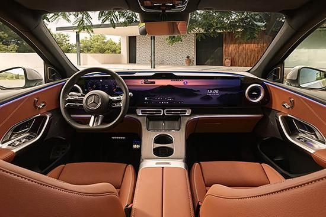
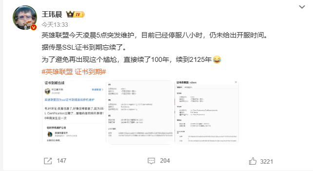
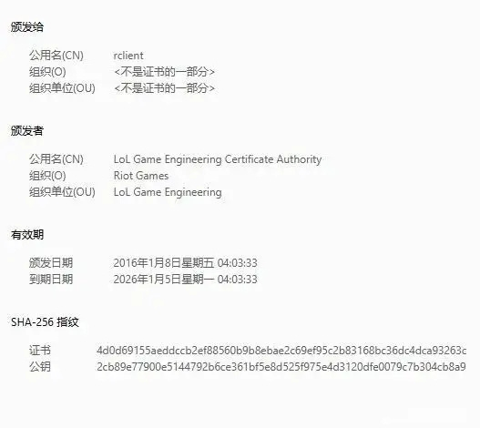
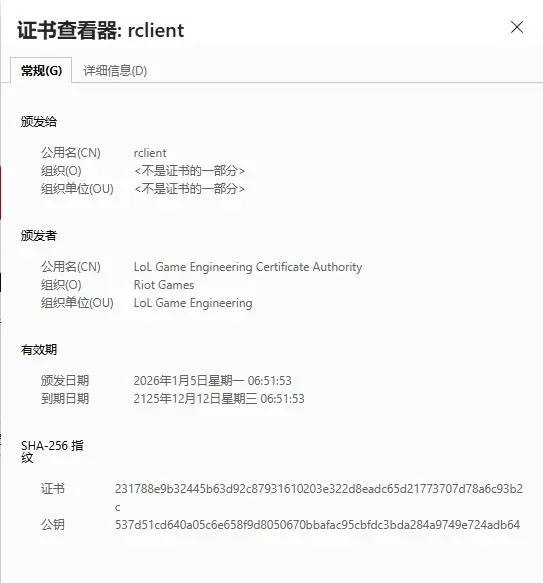
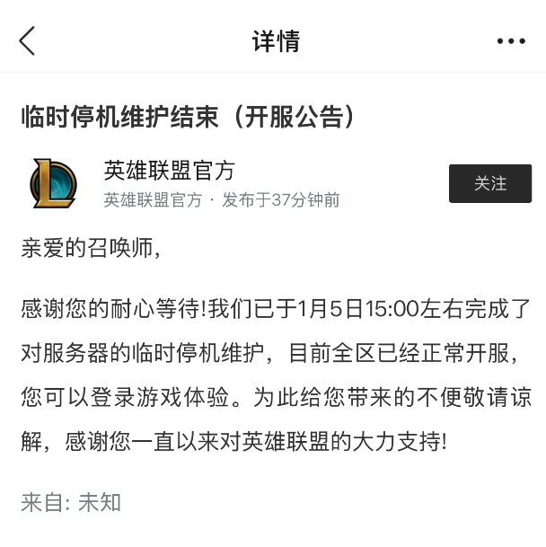

該類衞星數據量較現有系統可增長數倍，圖像數據產生速率可達幾十Gbps。
此次影像為元旦當晚哈爾濱冰雪大世界園區夜景。
在夜光成像模式下，高分07系列衞星可獲取幅寬15km的高空間分辨率、高無控定位精度夜光推掃影像，實現對單個路燈照明區域良好成像。
該成像模式採用超穩姿態控制下的降速推掃技術，結合長曝光高級數時間延遲積分方法，顯著提升探測靈敏度。
根據初步應用評估顯示，該技術具備良好的市場應用前景。
該類衞星數據量較現有系統可增長數倍，圖像數據產生速率可達幾十Gbps。
此次影像為元旦當晚哈爾濱冰雪大世界園區夜景。
在夜光成像模式下，高分07系列衞星可獲取幅寬15km的高空間分辨率、高無控定位精度夜光推掃影像，實現對單個路燈照明區域良好成像。
該成像模式採用超穩姿態控制下的降速推掃技術，結合長曝光高級數時間延遲積分方法，顯著提升探測靈敏度。
根據初步應用評估顯示，該技術具備良好的市場應用前景。
消費級NAND閃存（對應SSD）則因原廠控管產能，和服務器端強勁拉貨排擠其他應用，估計各類產品合約價持續上漲33-38%。
TrendForce表示，雖然2026年第一季度預期筆記本出貨將同比減少，且部分中低端機型出現SSD容量降級以壓低BOM 成本的情況，影響消費端SSD需求。
然因原廠追求利潤最大化，消費端SSD供給受數據中心SSD排擠，以高性價比的大容量QLC產品供應最緊，預估第一季消費級SSD合約價仍將增長至少40%，漲幅為各類NAND閃存產品之最。
手機品牌方面，即便在淡季對內存需求不強，然因移動DRAM內存供給緊縮情況難在短期內改善，且未來數季合約價可能再升高，品牌於第一季維持較強拉貨力道。預計LPDDR4X、LPDDR5X皆呈現供不應求、資源分配不均情況，價格繼續走強。
以下為2026年第一季度DRAM內存、NAND閃存價格預測：
令爆料人不滿的是，事發後長榮航空並未第一時間對施暴的文姓機長採取停飛處置，反而容許情緒管理不穩定的機長繼續執飛。
此事引起熱議後，長榮航空於1月2日發布聲明稱：
有關近日媒體報道及網絡流傳長榮航空正副駕駛相關爭議事件，因部分內容與事實不符，為避免外界誤解，長榮航空特此説明如下：
一、依據該航班飛機上的快速存取記錄器（QAR）資料顯示，該航機滑行速度符合要求，並無網傳的超速。本公司亦已就相關事實向主管單位報備説明，呼籲外界切勿以訛傳訛，混淆視聽。
二、針對外界關切該事件機長執勤相關行為，長榮航空於事件發生後即主動啓動內部調查機制，同時通報相關主管單位，以全面釐清實際情況與相關事實。此外，本公司也依法主動關懷了解並提供員工心理諮詢等協助方案。
三、基於調查需要，目前已先暫停正駕駛執飛任務。相關調查已在進行中，待調查完畢，會盡快安排召開紀律委員會進行審議。
ID.POLO的內飾將成為大眾未來的家族式設計風格，將會配備10.25英寸儀表盤以及13英寸中控屏，還會保留大量的物理按鍵，對於此前就駕駛大眾燃油車的用户來説，上手幾乎沒有難度。
有意思的是，它還會提供復古主題，儀表界面以及中控娛樂系統顯示風格切換到20世紀80年代風格，配合方向盤上的實體按鍵，甚至有些黑莓手機的感覺。
配置部分，該車將會提供前排座椅加熱和方向盤加熱等功能，另外還會配備Travel Assist駕駛輔助系統，支持高速自動變道、紅綠燈及停車牌識別。
回顧外觀，ID.Polo基本延續了此前發布的ID. 2all概念車設計，前臉採用封閉式設計，並搭載時下流行的貫穿燈帶，燈帶中央為可以點亮的品牌LOGO。
車身尺寸方面，參考此前的概念車，長寬高4050/1812/1530mm，軸距2600mm，定位代步小車。
側面及尾部設計同樣基本延續概念車，採用貫穿設計的尾燈組，燈組中央同樣為可點亮品牌LOGO。
新車將會在大眾MEB Entry前驅平台打造，其將採用前輪驅動，提供三種動力版本，最大功率分別為85千瓦、99千瓦以及155千瓦，後續還將推出GTI版本，其驅動電機最大功率為166千瓦。
根據配置不同提供37kWh和52kWh兩種電池組，前者為磷酸鐵鋰電池組，後者為三元鋰電池組，其中52kWh電池組續航可達450公里。
phantomofearth發現，微軟正在調整Windows 11的“就近共享”設置頁面，這是一個類似於蘋果AirDrop的文件共享功能。
更新後，該功能將更名為更簡潔的“分享”，更重要的是還將引入了一個極具實際意義的開關：“在分享界面顯示建議的應用”。
此前當用户通過系統內置界面分享文件時，微軟會以“推薦”的名義展示一些應用的廣告，誘導用户點擊安裝，但並非所有用户都喜歡這種推薦方式。
隨着這一新開關的加入，用户終於可以在“設置>系統>分享”中手動關閉這些令人心煩的推廣信息。
除了“共享”功能外，Windows 11的開始菜單也進行了重新設計，用户可以完全關閉推薦部分，從而為自己的應用騰出更多空間，而不是被一個巨大的空白區域佔據。
一輛「粵車南下」私家車，在青衣與一輛旅遊巴相撞，無人受傷。
中午約12時，一輛掛有粵車車牌、往尖沙咀方向行駛的私家車，駛至青沙公路近海麗邨對出時，與一輛旅遊巴相撞，警方接報到場處理。

衞生防護中心日前表示，夏季流感季節有機會於未來一至兩周完結，有小學校長說，已準備面對下一季度流感爆發風險。
港大兒童及青少年科學系講座教授劉宇隆，再次呼籲市民接種流感疫苗。

詳盡報道本地時事、大中華消息、國際局勢等新聞，緊貼最新熱話。

中環海濱活動空間目前租約將於6月30日結束，發展局今日（5日）表示，地政總署正就佔地約3.7公頃的中環海濱活動空間新租約公開招標，約6星期的招標期至2月13日截止。新租約預計於4月前批出並由7月開始，為期5年。與上月就紅磡海濱活動空間的招標一樣，發展局於招標中加入條款，強化租約承租人對日後活動舉辦方的監察角色，並常規化溝通預警機制。另外，條款將列明，如活動空間內有不少於約三分之一的範圍，連續3日或以上未有舉辦活動或租出，承租人需開放該部分場地供公眾免費享用。
發展局發言人說，政府一直以來透過由外間團體承租中環海濱活動空間的管理模式，成就多項大型盛事，而是次招標會保留此管理模式，但在兩方面作出優化，包括優化租約條款，推動租約承租人善用空間安排更豐富的連串活動。
經優化條款包括將技術建議的評分比重由從前的40%增至70%，考慮活動是否多元、能否提升海濱活力、對訪客的吸引力等。新租約的固定年期亦由3年延至5年，鼓勵承租人作長遠投資和規劃，而承租人亦需在新租約開始後1年內，開始在用地以北接壤海濱長廊地帶，提供不少於100平方米樓面的恆常餐飲設施。
每年最少約三成日數舉辦供公眾參與活動 不達標須支付補償金額
招標條款亦將繼續規定，每年最少要有約三成日數舉辦開放予公眾參與的活動；若承租人每年出租場地舉辦活動的日數未能達到其承諾的日數，須向政府支付補償金額，即每少一日繳交相等於月租10%的款項。
是次招標加入條款強化租約承租人對日後活動舉辦方的監察角色，並常規化溝通預警機制，讓發展局作為場地業主適時介入，包括：要求承租人接納場地租用申請前，須先行評估申請者的背景、舉辦活動的能力、活動可行性等，並按時向發展局提交評估報告。承租人亦需密切監察活動籌備過程，例如活動安排是否符合原先建議、能否如期申領牌照或許可，以至門票出售安排等，並適時通報發展局；條款亦規定承租人及活動舉辦方須在開展活動前和發展局舉行三方會議，以便確立最後階段的情况和部署。

曼聯今晚（5日）宣布，魯賓艾摩廉卸任主教練一職，結束14個月執教「紅魔」生涯。官網聲明表示，球隊目前排第6，管理層不得不做出艱難決定，並認為現在是時候做出改變，從而令球隊更有機會爭取英超更高排名，並交代將由U18教練的球隊名宿費查暫代領軍周四作客般尼。
曼聯昨晚英超作客1：1打和列斯聯，連續兩場不勝後，魯賓艾摩廉在賽後記者會突然發表「我是領隊（Manager）而非僅是教練（Head Coach）」的言論，引起熱議。這名40歲葡籍少帥上季季中接手後，雖帶領球隊晉身歐霸盃決賽，但只得亞軍，而且英超亦取得隊史最差的15名成績完季。
曼聯現以20戰31分排第6，落後榜首阿仙奴多達17分，但與第4的利物浦只差3分。

東京豐洲市場周一（5日）舉行2026年首場競投，一條重達243公斤的青森縣大間產藍鰭吞拿魚以5.103億日圓（約2530萬港元）成交，打破原築地市場搬遷至豐洲後，較2019年首個新年278公斤的「日本一」創下的3.336億日圓（約1653萬港元）紀錄高出超過一半。
今次投得這條吞拿魚的是經營壽司連鎖店「壽司三昧」（Sushizanmai）的喜代村公司。社長木村清說，成交價比所估計的3億至4億日圓稍高，但表示「拔得頭籌的吞拿魚是好意頭，希望有盡量多的人品嘗」。共同社報道，該吞拿魚在該公司在築地的總店切割後，將以正常價格供應至全國分店。
過往每年新年的「日本一吞拿」競投均備受矚目，而近年成交價格從新冠疫情期間的低位大幅反彈，其中2023年成交價為3604萬日圓，2024年為1.1424億日圓，去年則為2.07億日圓。
非牟利皮尤慈善信託基金會國際漁業小組主管格什曼（Dave Gershman）表示，拍賣價反映太平洋藍鰭吞拿魚生態經過數年前幾近崩潰後出現改善。他指出，2017年推動的保育計劃取得成效，期望美日韓等太平洋國家今年能達成長期協議，確保藍鰭吞拿魚生態持續回復至健康水平。

拉脫維亞國家警察部門周日（4日）證實，一條經波羅的海海底連接立陶宛與拉脫維亞的海底通訊光纖電纜於上周五受損。事發後，調查人員登上一艘涉案船舶調查。警方表示，暫時未有船舶與船員被拘留。拉脫維亞總理希莉娜（Evika Silina）在社交平台X上表示仍在調查原因，而事件並未影響本國用戶通訊情况。
自2022年俄軍侵烏以來，波羅的海地區已發生多宗電纜與管道損毁事件，外界矛頭普遍指向俄羅斯，北約已加強在該海域的巡邏。今次公布電纜受損事件前5天，芬蘭警方扣押一艘由俄羅斯駛往以色列的貨櫃船，理由是它涉嫌破壞連接芬蘭與愛沙尼亞之間的海底光纖電纜。（路透社）
實現這一形態的關鍵在於其無線傳輸技術。W6搭載的Zero Connect無線方案，可無損、無延遲地傳輸4K/165Hz的高品質視頻與音頻信號，這是該技術首次被應用於LG OLED電視。
用户只需將所有外部設備連接至一個小巧的Zero Connect信號盒，並將其放置在遠離屏幕的位置，即可徹底擺脱線材纏繞，尤其適合擁有多台遊戲主機或播放設備的用户。
畫質方面，W6由新一代Alpha 11 AI處理器驅動，並採用超輻射色彩技術。其峯值亮度可達普通OLED電視的近4倍，配合能直接中和反射光的臻彩抗反射塗層，即便在明亮環境下也能呈現清晰、深邃的畫面。
此外，W6也是一款為遊戲優化的顯示設備，支持英偉達G-Sync與AMD FreeSync Premium，擁有0.1毫秒的響應時間並配備自動低延遲模式，能有效減少畫面撕裂和操作延遲，滿足高品質遊戲的需求。
日本首相高市早苗1月5日在三重縣伊勢市召開新年記者會。共同社報道，高市就惡化的日中關係表示：「對對話持開放態度。將繼續與中國方面溝通，從國家利益的角度作出適當應對。」
高市早苗去年11月在國會公開表達「台灣有事就是日本有事」意見，引發中日關係惡化。（綜合報道）

美國總統特朗普周日（4日）表示，古巴已「瀕臨垮台」，並淡化美國在當地採取任何軍事行動的必要性。
法新社報道，特朗普在總統專機空軍一號上向記者說，若失去委內瑞拉高度補貼的石油供應，古巴將「很難撐下去」。他補充說：「我不認為我們需要採取任何行動，（古巴）局勢看起來正在走下坡。」他又說「古巴現在是一個正在失敗的國家，一個面臨嚴重失敗的國家。我們希望幫助那裏的人民」。
美國國務卿魯比奧（Marco Rubio）則表示，古巴正由「無能且年邁昏聵的人」所統治，而許多協助馬杜羅的人都是古巴人。他說：「委內瑞拉人面臨的最大問題之一，是他們必須宣告擺脫古巴，古巴從安全層面上幾乎試圖殖民委內瑞拉。所以說，如果我住在哈瓦那、又在政府裏任職，至少會感到有點擔憂。」（法新社）

沙田威爾斯醫院的地盤發生工業意外，一名男工人頭部受傷，送院治理。
事發在下午2時許，兩名工人在地盤升降台工作，當升降台升至某個高度時，其中一名工人頭部撞到橫樑，受傷流血，陷於半昏迷狀態，送到威爾斯醫院救治，另一名工人及時蹲下躲避。
2025年5月，長安汽車董事長朱華榮在公司2024年股東大會上宣佈，公司2025年的銷量奮鬥目標是：全口徑收入實現3000億元，總體銷售300萬輛，其中新能源達到100萬輛。
根據長安汽車日前發布的公告，2025年1-12月，公司銷量291.30萬輛，累計全口徑彙總收入約2860億元。對比之下，銷量和收入均未達原先目標。


美國對委內瑞拉採取軍事行動後，美國總統特朗普還威脅要對哥倫比亞和古巴進行干預。中國外交部發言人林劍1月5日在記者會表示，中方堅定支持拉美和加勒比和平區地位，反對任何違反聯合國憲章宗旨和原則，侵犯別國主權安全的行為，反對在國際關係中使用或威脅使用武力，反對外部勢力以任何借口干涉拉美國家內政。
林劍強調，拉美和加勒比有權自主選擇發展道路和合作伙伴；中方願同拉方一道繼續團結協作，應對國際風雲變幻，以互利合作共謀發展繁榮，造福雙方人民。（中國外交部）


日本山形縣產高檔櫻桃品種「佐藤錦」周一（5日）在天童青果市場首次競投拍賣，一箱68顆的櫻桃以155萬日圓（約7.69萬港元）成交，由JA天童食品投得；另在東京都大田市場，「佐藤錦」更以180萬日圓（約8.94萬港元）成交，相當於每粒櫻桃超過2.6萬日圓（約1290港元）。以上成交價均創歷史新高。
JA天童食品營業部副部長萬年憲一表示，聽說今年天氣不佳，種植櫻桃格外困難。
櫻桃一般在初夏成熟，若採用特殊栽培法，將果樹置於冷凍庫令其感受「冬季」後，再移入溫室培育，有助提早收成。
「佐藤錦」是日本最受歡迎的櫻桃品種之一，色澤鮮紅，甜酸平衡，果肉飽滿多汁，最早於1928年面世。日本農民佐藤英介研究兩種櫻桃品種結合，一種是口感緊實、酸味濃郁的拿破崙櫻桃，另一種是口感柔嫩香甜的黃玉櫻桃，培育出新品種「佐藤錦」，這種櫻桃的成熟期更長，被譽為「櫻桃之王」。目前持續有新的品種與「佐藤錦」櫻桃進行結合。（共同社/日本外交部web-japan.org）

愛護動物協會的「全城狗狗行善日2026」將成為香港首個允許中小型寵物狗搭乘港鐵的活動，九巴亦將提供專屬寵物巴士服務。活動將於3月1日在迪士尼樂園度假區舉行，預計吸引超過3000名參加者與其愛犬。
港鐵公司將於活動當日首次開放鐵路網絡，開放予符合要求的中小型狗隻乘搭。參加者於2月20日前登記並捐款港幣90元予愛協，便可獲得一條「港鐵一日狗狗同行手帶」，名額為1200個，參加者於活動當日佩戴手帶便可攜帶一隻犬搭乘港鐵列車；所有狗隻進入港鐵範圍前必須放置於完全封閉的寵物袋或背包中，並符合港鐵運載行李條件之尺寸要求；港鐵網絡內亦禁止使用任何帶輪子的寵物手推車運送狗隻；
參加者及其狗隻只可於列車最後一卡車廂上落車，並需全程留於該車廂；狗隻於整段旅程中必須全程留在完全封閉的寵物袋或背包內，不可露出任何身體部位，亦嚴禁於車廂內打開寵物袋。參加者亦可搭乘九巴寵物巴士往返活動場地迪士尼樂園。
港鐵公司副總監—車務營運及本地鐵路李婉玲表示，繼輕鐵「貓狗同行」計劃成功推行後，是次安排為推動寵物共融的重要一步。愛協副執行總監何翔蕾則說，是次活動為香港邁向寵物共融社會的重要里程碑，透過這次突破性的合作，正一步步實現更有同理心、更寵物友善的香港。
愛協「全城狗狗行善日2026」屬愛協推行的寵物同樂日及慈善籌款活動，活動包括慈善步行及寵物嘉年華，善款用於動物福利。

第59屆工展會將於今日（5日）晚上8時閉幕。主辦單位廠商會表示，為期24天的展會吸引約136萬人次入場，較上屆增加5%，銷售總額約10億元，認為受惠於零售市道回暖、節日旅客增長、展會的折扣優惠和娛樂體驗。
廠商會會長盧金榮對成績感到滿意，提到保健品、食品、參茸海味及酒品類別特別受歡迎，帶動整體銷售成績理想。他又認為，過去一年零售市道顯著回暖，而且聖誕新年期間，城中有各項特色節慶活動，將日均旅客數量推升至疫後新高，令消費氛圍熱烈，而工展會可把握這些外在利好因素，並積極豐富展會內容及加碼獎賞，成功吸引人潮。
今屆工展會於聖誕期間延長開放時間，並為旅客及晚上7時後入場的人士提供免費入場，亦聯同展商推出數百項折扣優惠，以及送出總值400萬元的禮品。


因為上面沒有標註使用期限，於是就前往一家門店兑換咖啡。
自己在點單時順利使用，然而在消費結束準備離店前，卻被店員告知券已過期無法使用，要求重新支付54元咖啡費用。
網友表示很不理解，券面未標註任何使用期限，且當時店員也承認這是星巴克發行的兑換券，但最終卻被要求支付費用。
對此，涉事門店人員回應稱，接待的新夥伴未遇過如此久遠的兑換券，因此無法正常核銷，要求顧客重新買單。
網友表示，經過多次溝通，星巴克官方客服最終給予自己兩張中杯電子兑換券，並將支付的54元以兩張中杯電子券的形式退回。

開業33年、高峰時擁逾30間分店的海皇粥店於去年5月全線結業，母公司海皇國際有限公司其後更被呈請清盤。母公司及兩名創辦人兼公司董事涉拖欠10名員工合共56.2萬元薪金，遭勞工處合共票控99項欠薪的罪名，案件今(5日)於東區裁判法院再提堂。母公司承認所有傳票，被判罰款6.6萬元，兩名董事則不認罪，案件押後3月2日作審前覆核。
被告分別為海皇國際有限公司、蔡汪浩、蕭楚基，各被票控33項沒有在到期日內付給工資罪。
海皇國際承認該33項傳票，每項傳票被判罰款2000元，因清盤人需時索取意見，決定繳款限期，案件押後1月19日再訊。傳票的內容指，有人提出告發指稱海皇國際於美孚、粉嶺、火炭、沙田，分別身為黃玉嬋、鄺佩玲、黃海雄、林翠怡、廖和琼、張國華、褚彩鳳、邱定娥、鄧佩玲、張麗珍的僱主，故意及無合理辯解而在沒有切實可行範圍內盡快，但在任何情況下不得於工資期最後1天，及僱傭合約終⽌後7天支付該些僱員於2025年1月至4月的工資，合共涉及逾56.2萬元。
至於蔡汪浩、蕭楚期的傳票則指他們身為海皇國際的董事，沒有向上述員工在到期日內付給工資。他們否認各33項傳票，案件會押後先作審前覆核，再定審期。

元朗區議員程振明及「村屋大王」王光榮涉嫌串謀在元朗十八鄉「套丁」，以發展屋苑項目「曉門」，當中5名作為丁屋申請人的原居民各否認一項串謀詐騙罪，案件今（5日）於屯門裁判法院開審。控方開案陳辭指，5名被告串謀包括原居民代表在內的人士出售丁權，發展商向其中4名被告支付5萬元至19萬元，5名被告之後向地政總署訛稱建丁屋自用，涉案丁屋最終分別以808萬至1100萬元售出。
被告為陳永堅（42歲）、楊啟光（56歲）、駱天龍（42歲）、黃觀勝（58歲）、陳志明（71歲）。
控方開案陳辭指，新界小型屋宇政策自1972年推出，讓年滿18歲的男性原居民得以向地政總署申請建屋牌照，以在合適的鄉村土地上建造一所「丁屋」自住，即行使丁權。原居民遞交建屋牌照申請後須與署方會面並簽署法定聲明，聲明條款包括申請人須為土地的唯一合法註冊業權人。署方批准申請後，申請人須簽署保證書及牌照，當中的條款規定申請人從未與任何人訂定協議來轉移土地或其權益。
控方又稱，5人於1991至2005年，分別與原居民代表、親友、發展商顧問程振明、以及其他身分不詳人士串謀，向發展商出售其丁權。發展商先將土地的法定業權轉讓予5名被告，儘管轉讓紀錄顯示5人分別以港幣10萬至22萬元購買土地，5人其實從沒付款。5人之後於2005年至2010年申請建屋牌照並簽署法定聲明，終獲署方批出牌照。
發展商分別向陳永堅、楊、駱、陳志明支付5萬、5萬、6.2萬、19萬元。5名被告其後透過由發展商聘請的王潘律師行，委任發展商僱員蔡子聰為代表處理丁屋申請。發展商憑5人的牌照建造丁屋以及申請丁屋的撤銷轉讓限制，使該些丁屋組成屋苑「曉門」的一部分，最後每幢分別以808萬至1100萬元向公眾出售。陳辭指，5人沒支付任何費用，也非丁屋的真正擁有人。

據現場消息，事發位置於地盤地庫一層，當時有工人操作一部升降工作台，受傷工人經過時，意外被撞到頭部。

台灣前領導人陳水扁今 （5日）表示，2011年他在獄中，打算在《壹週刊》寫專欄，前領導人馬英九的一句話，讓台北監獄放行；現在他要主持《總統鏡來講》，法務部矯正署長林憲銘卻說行政院長卓榮泰下令不准播出。
自2015年獲准保外就醫的陳水扁，原定於昨日（4日）在鏡電視官網主持政論節目《總統鏡來講》，卻被臨時喊停。陳水扁透過facebook發文說，2011年他在龜山，想賺點稿費補貼家用，打算在《壹週刊》寫專欄，第一篇＜馬宋會不如不會＞，就被監方以「會引發政治效應、帶來社會分歧及影響獄方信譽」為由退回。馬英九當時對此受訪表示，受刑人被剝奪的是人身自由，但憲法的言論自由仍應受保障。馬英九這句話使台北監獄放行，只是題目改為＜馬宋會無好會＞。
陳水扁表示，2026年他要主持《總統鏡來講》，沒想到1月3日中午與矯正署長通話，署長說那是卓榮泰下令不准播出。（綜合報道）

國務院新聞辦公室於今（5日）舉行新聞發布會，介紹長江經濟帶發展十年工作進展和成效。國家發展改革委副主任王昌林在會上表示，長江幹線港口貨物吞吐量增長71%、達到42億噸、穩居世界內河第一。
王昌林介紹，十年來，橫貫東西、承接南北、通江達海的優勢在長江經濟帶持續釋放，開放長江活力更加澎湃；當局堅持鞏固提升長江黃金水道功能，加快構建沿江綜合立體交通走廊，長江水系高等級航道由0.8萬公里增加到1.1萬公里。


今日（5日）下午，國家主席習近平在北京人民大會堂北大廳舉行儀式，歡迎韓國總統李在明訪華，二人並舉行會談。應習近平邀請，李在明從昨日（4日）起至周三（7日）對中國進行國事訪問。（央視新聞）


去年除夕夜（2025年12月31日），油麻地發生一宗致命交通意外，一輛重型貨車疑撞倒一名正運送垃圾的食環署清潔工，57歲姓李女工當場昏迷，送院搶救不治。工業傷亡權益會已接觸到家屬，早前陪同他們到事故現場舉行「招魂」儀式，今早到殮房認領遺體，並將繼續協助他們處理後事。
工權會今早撰文指，57歲李姓清潔女工去年除夕夜晚上8時許，在油麻地工作期間遭大型貨車撞斃。該會較早時已接觸家屬並提供緊急支援，除早前陪同家人到現場舉行「招魂」儀式，今早也與他們到殮房認領遺體，將繼續跟進跟進及協助。
工權會指，工友任職於食環署近10年，現遺下丈夫和一名兒子。其丈夫曾遭遇嚴重工傷意外，嚴重影響腿部活動能力，不良於行，無法工作。工友與丈夫感情要好，夫婦現天人永隔，事主丈夫大受打擊。現時由其兒子獨力承擔工友後事及家庭經濟開支。
工權會總幹事蕭倩文表示，工友的丈夫及兒子現時均非常傷心，該會將繼續支援他們，包括協助申請經濟援助及處理後事。
她又指，工友遇上事故的地點雖非交通黑點，惟經常有重型車輛出入，「推車經過都有風險」，希望食環署可以檢討清潔工裝備，除現有的反光衣、及手推車上的識別旗幟，可考慮參考其他地方經驗，引入有閃燈的安全衣，令清潔工在工作時更容易被其他道路使用者識別。

中國郵政《丙午年》馬年生肖郵票今日（5日）正式開售，全套共有兩枚，分別名為「馳躍宏圖」和「萬駿臻福」，吸引不少集郵愛好者在首發日前往購買。
「馳躍宏圖」圖案是一匹紅馬踏雲，表達新一年中國經濟發展繼續行穩致遠，朝「十五五」時期主要目標奮進的期許。「萬駿臻福」圖案是三匹駿馬並馳，象徵全國人民在全面建設社會主義現代化強國、推進中華民族偉大復興征程上協力同心。
全套郵票面值2.4元人民幣，計劃發行套票2668萬套，版式二162萬版，小本票280萬本。（人民日報）

今天（5日），2026年《丙午年》特種郵票正式首發。《丙午年》特種郵票全套共兩枚，自2026年1月5日起，消費者可以通過官方渠道購買《丙午年》特種郵票。
第一枚郵票圖案名為「馳躍宏圖」，圖中紅馬踏云、鬃毛如焰，表達了在新的一年裏，對中國社會經濟發展繼續行穩致遠，朝「十五五」時期主要目標接續奮進的美好期許。第二枚郵票圖案名為「萬駿臻福」，圖中三駿並馳、祥紋環繞，象徵全國各族人民凝聚磅礴合力，在全面建設社會主義現代化強國、全面推進中華民族偉大復興征程上協力同心。
《丙午年》特種郵票由王紅衛、趙恩重設計，北京郵票廠有限公司採用膠雕套印工藝印制，全套郵票面值2.40元人民幣，計劃發行套票2668萬套，版式二162萬版，小本票280萬本。

中國著名搖滾樂隊「黑豹樂隊」創辦人之一、著名音樂人郭傳林於2026年1月4日因病逝世，享年66歲。
黑豹樂隊官方微博1月5日發布訃告，披露郭傳林在山東青島家中逝世，遺囑喪事從簡，不舉辦任何追悼儀式。樂隊並稱，「四哥，一路走好。」
郭傳林從小就對音樂產生濃厚興趣，自學吉他成為出色吉他手。在中國流行音樂初創階段，郭傳林與一些志同道合的朋友一起，在1987年組成了黑豹樂隊，並擔任吉他手，行內稱「四哥」。
1991年黑豹樂隊簽約香港勁石唱片公司，並於8月發布了首張樂隊專輯《黑豹》，其中《Don't break my heart》、《無地自容》等歌曲傳唱神州大地。
郭傳林後來退出舞台致力經營黑豹樂隊，成為黑豹在內諸多音樂團體的經紀人。（綜合報道）

非洲國家盃今晨（5日）續演16強，主辦國摩洛哥隊藉前鋒巴謙戴亞斯一箭定江山，以1：0擊敗淘汰賽新丁坦桑尼亞隊殺入8強，戴亞斯亦成為隊史首位連續4場在非國盃決賽周建功的球員。摩洛哥隊緊接周六凌晨將與同日以2：1擊退南非隊的喀麥隆隊爭闖4強。
摩洛哥隊在A組以兩勝1和首名出線，是役首次派出傷癒的隊長夏基美擔任正選右閘。這支僅曾在1976年奪冠的北非雄師，甫開賽即搶攻，鋒將沙巴利15分鐘接應罰球頂入，但在視像裁判（VAR）覆核後判越位在先令入球被推翻，中鋒阿尤比艾卡比在上半場末段門前頂失，半場悶和0：0。下半場60分鐘，夏基美在右路勁射罰球中楣彈出不入，4分鐘後這名應屆非洲足球先生交直線予巴謙戴亞斯，後者轉身再推入禁區射近柱破網，這支東道主最終藉這入球以1：0小勝首次殺入非國盃淘汰賽的坦桑尼亞隊；第2次膺賽事最佳球員的巴謙戴亞斯，則成為摩洛哥隊史首名非國盃決賽周連續4仗建功的球員。
同日另一場16強，喀麥隆隊憑右閘達查馬度上半場34分鐘射入先開紀錄，加上前鋒基斯甸高法尼換邊後頭槌破網，以2：1擊敗在88分鐘破蛋的南非隊，8強將硬撼摩洛哥隊。至於昨晨遭馬里隊淘汰16強止步的突尼斯隊，今日宣布解僱主帥森美查比斯。

下午2時許，紅磡民樂街18號凱旋工商中心3期外牆一幅石屎剝落，墜落一樓棚架，碎片四濺並彈落停車場，擊中一名女途人，一部私家車亦被碎石擊中車身。警方接報到場圍封現場調查。事件中受傷的女途人腳部受傷清醒，由救護車送院。涉事私家車當時無人在車上，司機表示較早前將車泊於上址，到工廈取件，返回取車時才得悉意外。

天文台公布，去年12月，香港的天氣遠較正常溫暖，全月最高氣溫22.4度、平均氣溫20.2度及平均最低氣溫18.4度，分別較其正常值高2度至2.2度，皆屬有紀錄以來12月的第二高，僅次1968年12月。去年亦是1999年寒冷天氣警告系統開始運作以來，首次年內11月及12月均沒有發出寒冷天氣警告；同時亦較正常少雨，全月總雨量為6.5毫米，較正常低22.3毫米。
1968年12月的全月最高氣溫為23.9度、平均氣溫21.3度、平均最低氣溫則為19.4度。
天文台早前發布的天氣隨筆《聖誕假期天氣轉涼》中表示，去年12月上旬至中旬，全國大部分地區平均氣溫顯著偏高，因為氣候風強度偏弱；此外，位於華中地區的大氣中高層有較強的反氣旋環流，抑制雲雨發展的同時使地表接收更多太陽輻射，冷空氣在南下過程中會因長時間受日照加熱而增溫，12月的總日照時間較正常的166小時再高4.4小時。天文台指出，此次區域性偏暖不單因上述原因導致，氣候變暖的背景下，華南地區的冬季氣溫已呈現顯著的長期上升趨勢。

新華社今（5日）報道，為充分體現以習近平為核心的黨中央的關懷和溫暖，日前，中央組織部從代中央管理黨費中劃撥4億元人民幣（約4.45億港元），用於2026年元旦農曆新年期間開展走訪慰問活動。中央組織部提出，走訪慰問對象為生活困難黨員、老黨員、老幹部。
中組部表示，對新中國成立前入黨的老黨員，要普遍走訪慰問。要關心關愛基層幹部特別是工作在條件艱苦地區和急難險重任務一線的人士。做好「共和國勳章」、「七一勳章」、國家榮譽稱號獲得者和全國優秀共產黨員、全國優秀黨務工作者有關待遇落實和走訪慰問工作。做好對因公犧牲黨員幹部家屬的走訪慰問、照顧救助和長期幫扶工作。可適當擴大走訪慰問範圍，做好正常離任村（社區）黨組織書記、村（居）民委員會主任以及因病致貧的特困群眾等的關愛幫扶工作，走訪慰問新就業群體中生活困難黨員，對確有困難的基層黨務工作者也可走訪慰問。
中央組織部要求，各級黨組織要提高政治站位，加強組織領導，用心用情開展走訪慰問，有針對性地做好思想政治工作，力所能及地幫助解決實際困難，努力取得「慰問一人、溫暖一戶、帶動一片」的良好效果。各地區各部門（系統）要落實配套資金，加強資金監管，做到專款專用，確保在農曆新年前發放到慰問對象手中。

斯林布里奇濕地中心的最後兩隻勺嘴鷸，死去的日子只差一天。工作人員考慮過剩下最後一隻的時候應該怎麼辦。是不是應該尋找幾隻其他物種的鷸鳥和它作伴呢？選擇什麼物種比較合適，又該怎麼幫助它們融洽相處呢？倒數第二隻死去的那天，其他人忙於屍檢的時候，有人注意到剩下的那隻勺嘴鷸出現了明顯的行為變化，不但叫聲增加了，而且總是守在鳥舍的門口，好像在尋找同伴的去向。
第二天，它也死了。這是 2024 年 11 月 11 日，街頭佩戴着虞美人、紀念一戰停火的人羣並不知道，一場更加漫長的戰鬥也在這一天迎來了終結。
認識勺嘴鷸
勺嘴鷸（Calidris pygmaea）是一種只有麻雀大小的小型水鳥。它最明顯的特徵，就是它的黑色長嘴末端膨大，活像一把小勺，觀鳥人給它的暱稱也是“勺子”。它會在濕地的淺水灘塗一邊向前行走，一邊低頭用這把小勺左右劃動，撈起苔蘚和小蟲吃掉，非常可愛。
勺嘴鷸。圖庫版權圖片，轉載使用可能引發版權糾紛
但它的生活史卻擁有和它嬌小體型完全不匹配的壯闊。
很多鳥類夏天在高緯度區域繁殖，冬天去低緯度越冬。勺嘴鷸的繁殖地在俄羅斯東北的堪察加和楚科奇半島，而越冬地卻在東南亞沿海一帶，兩地相距 8000 多公里。為了跨越這漫長的旅途，它需要在途經的中日韓等地的各處濕地短期停留，補充能量後繼續上路。這條路線構成了“東亞-澳大利西亞遷飛區”的核心，每年有 5000 萬隻水鳥沿着這一遷飛區踏上旅程。這是這顆星球上最宏大的遷徙之一，然而，也是處境最危急的遷徙之一。
東亞地區的人口密度和土地壓力本就位居世界前列，而每遇土地開發和改造，濕地總是首當其衝。江蘇鹽城的條子泥濕地，是遷飛區上面積最大，重要性最高的補給站之一。然而晚至 2011 年，鹽城還啓動了百萬灘塗圍墾計劃，40 萬畝的條子泥濕地有 34.6 萬畝被列入其中。到項目暫停之時，已經有超過 10 萬畝變成了海水養殖場。
每一片被毀滅的濕地，都會牽動沿途遷徙的所有鳥類，形成傷害的複合疊加。勺嘴鷸的成鳥數量在 1977 年估計還有將近 6000 只，2002 年已經下降到了 2000 只，到 2010 年已經下降到不足 500 只，在國際自然保護聯盟紅名冊上位列“極危”，距離滅絕只有一步之遙。按照這一趨勢，人們擔心到 2020 年，勺嘴鷸就會從地球上消失。
按照常理，要挽救瀕危動物，首選方案就是劃立保護區，讓它們的生存環境不再被人類打擾。但保護候鳥需要沿途每一個國家地區的合作，每一環都不能出問題；面對近在眼前的滅亡，誰也沒有這樣的信心。更何況，勺嘴鷸的遷徙路線依然沒有完全探明，還有很多隱藏的繁殖地、越冬地和中轉地，恐怕會在被研究者找到之前就永遠消失。
所以，研究者啓動了一個前途未卜的項目，那就是勺嘴鷸的遷地保護：把一小羣鳥兒搬運到安全的環境裏圈養。就在 2011 年，也就是百萬灘塗圍墾項目開始的那一年，野禽和濕地基金會牽頭的研究小組前往俄羅斯楚科奇州的梅村，在這裏收集了 25 個勺嘴鷸的蛋，希望能在完全人工的環境裏讓它們長大和繁殖，建立備份的種羣。
圈養的地點選在了英國格洛斯特郡的斯林布里奇村，村名的意思是“窄橋”。基金會在這裏擁有一處保護中心，是 1946 年彼得·斯科特爵士設立的，他是死在南極的探險家羅伯特·斯科特的獨生子。
困難重重的遷地保護
每一個參與者都知道這項目有多困難。
勺嘴鷸一年一度進行的八千公里遷徙，意味着它們實際體驗的季節非常特殊。每年十月到四月，東南亞越冬的勺嘴鷸經歷的氣温高點經常超過 30 攝氏度，低點也在 20 度上下。相反，每年七月勺嘴鷸回到俄羅斯的繁殖地時，最高氣温只有 15 度，低的可到 0 度左右。年中涼爽、年底炎熱，和英國的氣候幾乎正好相反。鳥舍大部分區域只靠網兜和外界隔絕，難以控制温度。雖然嚴冬季節可以把勺嘴鷸暫時關在有供暖的室內，但夏季是它們的繁殖季，如果限制了它們的行動，就無法正常繁殖了。
可是，又不能因此簡單地把冬夏顛倒過來。這既是因為勺嘴鷸有自己的發育進度，也是因為勺嘴鷸的生理活動還需要光週期。夏天日照長、冬天日照短，這一規律並沒有因為它的遷徙而改變。光照不足的時候雖可進行人工補光，過多就很難挽救。
雖然有充足的心理準備，實際遭遇的難題還是超越了所有人的想象。鳥舍的彎曲透明屋頂導致夏天熱量聚集，不同區域的隔離又阻礙了通風，夏季炎熱讓勺嘴鷸無精打採昏昏欲睡，耽誤了大量繁殖時間。而冬季的陰冷，又讓換毛的時間發生了錯位，少量冬毛一直延續到了夏季。工作人員設計了各種辦法補救，包括放置冰塊、增添通風扇、不停換水還有在土壤裏埋設地暖。
光照也出了問題。起初的補光燈是低頻熒光燈，後來才意識到燈的閃爍可能有不良後果，全部改成了高頻。鳥類能夠感知到人眼看不到的紫外線，設施裏也加裝了紫外線燈，但沒有人仔細測量實際的亮度。
圖片來源：WWT
2016 年，第一批勺嘴鷸在完全圈養、沒有遷徙的情況下成功繁殖，產下了 7 個蛋。可是研究者的興奮之情很快就被潑了一頭冷水，7 個蛋裏只有 2 個成功孵化，兩隻小鳥也很快夭折了。檢查發現這一批蛋有非常嚴重的缺鈣問題，有一巢蛋的蛋殼極薄，缺失了角質層，其中一個蛋甚至是軟的，不久就塌下去了。至於死去的兩隻小鳥，屍檢發現骨密度嚴重低下。此外，很多母鳥在繁殖季節身體狀態明顯下滑，有可能就是用自己的儲備鈣去填補空缺導致的。在這之後，工作人員設置了新的紫外燈，給飼料裏添加了維生素 D，還放進了一些老鼠尾巴，因為新的研究發現野生的極地鳥類會吃旅鼠的骨頭和牙齒來補鈣。
截至 2021 年，圈養的勺嘴鷸一共產下了 19 個蛋。孵化出了 7 只幼鳥，其中 3 只活到了能飛的年齡。但是，項目卻在這裏迎來了尾聲，因為就在這一年，最後一隻雌鳥死去了，鳥羣裏只剩下了雄鳥。
圈養勺嘴鷸的生存危機
圈養環境的勺嘴鷸飽受各種傷病困擾。温度和光照的不適應給它們的生理帶來了巨大的壓力，有些補救措施還讓情況惡化了。2019 年工作人員曾試圖改變光週期，誘騙勺嘴鷸提前進入繁殖期，這樣就能讓它們的繁殖錯開英國炎熱的夏季。雖然這一計劃成功了，但是之後鳥羣裏就爆發了大範圍念珠菌感染，短短兩個月裏 4 只鳥死去。研究者猜測，這可能就是節律被打亂導致的。澱粉樣病變和慢性足底皮炎，也都是屢次出現的死因。
但是最令人心疼的，是飛行中撞擊導致的死亡。斯林布里奇的鳥舍以保護中心的標準已經算不錯，可是任何鳥舍都無法和西伯利亞的廣闊苔原相比。鳥舍的天花板和燈具周圍都安裝了網，用來給撞擊提供一點緩衝，可是後來發現這網的彈性太好，會像蹦牀一樣把身體嬌小的勺嘴鷸彈回地面。儘管多次補救，撞擊還是導致了 10% 的鳥兒死亡。

部分飛行撞擊造成的傷害（脊柱損傷、眼傷、喙傷）。圖片來源：WWT
其實勺嘴鷸能夠學會在狹小空間裏進行有限的飛行，但是一旦發生意外、出現驚飛，就顧不上了。有時候這樣的驚飛是因為附近出現了猛禽的身影或者叫聲，也有的時候原因不明。2018 年，第一隻在這裏成功長大的鳥兒就在第 49 天的夜裏突然驚飛，撞死了。
在那之後，研究者不得不給所有的幼鳥都剪了飛羽。他們希望，等到幼鳥換毛長出新的飛羽時，已經適應了鳥舍的環境，就像它們的父母適應了不能用飛行展示來求偶。但是這樣長大的小鳥，會對自己的狹小世界留下怎樣的印象呢？
新希望
2021 年的最後兩個蛋狀態都很差。1 號蛋被發現的時候殼上已經有了凹坑，工作人員用膠水黏住了裂口，還塗上了指甲油、裹上了保鮮膜，想要阻止蛋的失水，可是劉海還是越陷越深，越陷越深，第 18 天的時候放棄。2 號蛋外觀正常，可是用光透射看不到任何血管的痕跡，沒有運動，沒有結構，第 24 天放棄。這大概是受雌鳥身體條件太差的影響。兩個月後雌鳥去世，斯林布里奇的人工繁育項目至此宣告失敗。
雖然中心還剩下幾隻雄鳥，但事到如今已經不可能再放歸自然了，從未經歷過真正遷徙的它們很可能無法在野外生存。因此中心的任務轉向了科研和教育，開始有限地接待外人蔘觀。到 2024 年，最後一隻死去時，項目才終於完全結束。
但勺嘴鷸的故事沒有在此終結。遷地項目的失敗，為其他保護手段提供了寶貴的經驗教訓。斯林布里奇雖然在追求種羣繁殖的時候屢遭挫折，但反過來證明瞭健康的蛋非常頑強，且能在人工條件下順利長大。受此啓發，2012 年研究者在梅村為遷地項目收集第二批蛋時，也啓動了一個平行項目，就是取走勺嘴鷸的蛋，在附近人工孵化，然後放回鳥羣裏。這樣既提升了蛋的存活率，又能促使母鳥在每個繁殖季產下更多的蛋。這一項目成果卓著，將勺嘴鷸繁殖的成功率提升了 4 倍，如今已經成為繁殖地保育的主要手段。
與此同時，保護勺嘴鷸的其他項目與合作也在推進中。2008 年，中國加入了東亞-澳大利西亞遷飛區夥伴關係協定。2016 年，國務院出台了《濕地保護修復制度方案》，定下了 8 億畝的濕地紅線。2019 年，鹽城條子泥濕地作為黃渤海候鳥棲息地的一部分，列入了世界自然遺產。2025 年 1 月中國勺嘴鷸越冬同步調查找到了 75 只，打破了歷史最高紀錄。根據 2024 年的估計，成年勺嘴鷸大約還有 331 到 554 只，種羣數量還在以每年 5% 的速度下跌，但相比前些年高達 26% 的幅度，已經讓人看到了一線希望。
保護之思
斯林布里奇的勺嘴鷸或許並不知道自己為何要展翅飛行，但它們還留存了這一本能。每年春天和秋天的遷徙季節，圈養的勺嘴鷸會出現明顯的躁動，活動量增加，在鳥舍裏亂竄和轉圈。工作人員在鳥舍裏劃出了繁殖專用區域，用食譜、植被和光週期等來模擬環境的變化。然而，要什麼樣的模擬，才能復現翱翔本身呢？
雖然聽起來像是一句廢話，但地球上的每一種生物都是在地球上演化出來的，無論是作為物種的歷史還是作為個體的生命，全都浸透了這顆星球的大地、海洋還有天空。環境會變，生物也能隨之改變，但是改變的速度是有限的。如果突然切斷和世界的聯繫，或許可以存活，但不可能繁盛。
這是每一個遷地保護項目都要面臨的困境。確實，如果野外種羣徹底崩潰了，圈養種羣就是最後的希望。但這希望是何等殘破，何等貧乏。斯林布里奇的勺嘴鷸或許終將忘記楚科奇的曠野，忘記鹽城的灘塗，忘記孟加拉的海島和泰國的鹽田，但要在怎樣的一個世界裏，我們才會覺得這是一件好事呢？
此刻，我們還站在岔路口。這岔路將會決定勺嘴鷸的命運，決定東亞-澳大利西亞遷飛區的存續，以及決定我們這顆行星的面貌。的確，無論遇到怎樣的環境災難，人類不會輕易滅絕，物種的遺傳信息也可保存，甚至有可能打造一座方舟，讓每一種生物以血肉之軀各居其位。但是，這樣截取的不過是生命的一個片段。哪怕有一天所有被破壞的生境都得以恢復，種羣也不可能假裝無事發生而重新開始。迎接它們的，只有漫長而痛苦的重建。
而那時，我們會生活在一個失去了顏色的地球上。
項目的最後報告裏記錄了一則現象。第一批勺嘴鷸抵達斯林布里奇的時候已經是冬天，所以全都安置在了有供暖的室內。但是所有的鳥都擠在了房間的最西南角，而不是靠近熱源的地方。
那是這個季節它們本應飛向的所在。

天文台在下午4時20分發出寒冷天氣警告。天文台預測本港未來兩三日早上天氣寒冷。明早（6日）市區最低氣溫約12°C，新界會再低兩三度。

天文台發出寒冷天氣警告，預測本港未來兩三日早上天氣寒冷，明早市區最低氣溫約12度，新界會再低兩三度。
天文台呼籲市民注意保暖，多穿禦寒衣物，並應保持室內空氣流通。

英國周一（5日）實施新法限制垃圾食物廣告，凡被認定含有高鹽、高糖和高脂肪的食物，其廣告將不可以在每日晚上9時前在電視播出，亦完全禁止在網上出現。
衛生部門表示，有關限制料可每年從兒童飲食中移除多達72億卡路里，減少癡肥兒童2萬人，帶來約20億鎊（209億港元）健康「好處」，形容禁令是對付兒童肥胖問題的「領先世界」行動。
不過快餐公司仍然可以使用其品牌進行廣告宣傳，因相關禁令只針對宣傳不健康產品的廣告。（法新社/BBC）


央視新聞今（5日）報道，中國首次組織的太空人洞穴訓練近日在重慶市武隆區圓滿結束，共有28名太空人參加了這次訓練。
為期一個月的訓練由中國航天員科研訓練中心牽頭組織實施。受訓太空人分為4組，輪流在平均溫度8℃、濕度高達99%的洞穴中連續駐留6天5夜。洞穴環境與太空極端條件有相似之處，如隔離、幽閉、高風險等。訓練期間太空人完成洞穴探索、科學研究、物資管理、生活保障等既定任務，還需經歷極窄通道穿行、斷崖攀爬垂降、長期濕冷刺激和極限體能考驗，並克服黑暗恐懼、感知剝奪等諸多挑戰。

據瞭解，2025年9月底荷蘭政府對安世半導體實施運營凍結後，該公司荷蘭總部再對安世中國採取斷供晶圓等單邊操作，進而引發全球車規級芯片結構性短缺，多國車企出現減產、停產現象。
其中，本田所受到的衝擊最為嚴重，日產及博世相關汽車配套生產也受到了波及。
受出貨暫停影響，本田在今年10月和11月曾暫停墨西哥工廠生產，美國和加拿大的工廠也被迫減產。
本田此前預計，截至2026年3月的財年，其營業利潤將因芯片短缺問題減少約1500億日元（約合66.6億元人民幣）。
受該因素拖累，本田已將2026財年全球汽車銷量目標由362萬輛下調至334萬輛。
2025年11月，本田中國市場終端銷量同比大跌33.78%，1-11月累計銷量下滑21.86%，廣汽本田已針對產能實施了一系列調整措施。
2025年10月，廣汽本田關閉年產能5萬輛的第四生產線，本田在華汽車總產能由此從149萬輛降至120萬輛。

另一方面，公司內部卻傳達出長達一年的“停工停產”計劃。其內部釘釘羣近日發布通知，稱將繼續停工停產一年，期間將按當地最低工資標準的80%向員工支付生活費，該通知被設置為禁止截圖或複製。
這已是公司第二次宣佈停工。此前於2025年7月6日，羅馬仕曾宣佈停工停產放假6個月。
自停工以來，大部分員工已陸續離職。目前留下的員工每月生活費尚能正常發放，深圳員工約為2016元，清遠員工約為1400元。
但部分未停工、負責產品召回等工作的客服人員，其本應正常發放的工資也出現了延期支付的情況。


中紀委1月5日通報，水利部原黨組成員、副部長田學斌涉嫌嚴重違紀違法，目前正接受紀律審查和監察調查。
現年62歲的田學斌是甘肅人，早年曾在中央辦公廳、國務院研究室工作，曾擔任前國務院總理溫家寶的秘書。
1990年12起，田學斌歷任中央辦公廳調研室幹部、副處級調研員，中央辦公廳、國務院辦公廳秘書；2008年擔任國務院研究室副主任、黨組成員。
2015年7月，田學斌離開國務院系統，擔任水利部副部長，至2023年12月退休。（綜合報道）
側面採用溜背式車頂線條，還搭配了隱藏式門把手，後包圍融入了烤漆裝飾和導流鰭結構，既延續了燃油版GLC的運動氣質，又通過電動化細節強化了純電身份。
這款新車在續航與動力上都相當亮眼，續航方面，在WLTP測試標準下預估續航里程可達713km，同時支持最高330kW的直流快充，按照官方數據，僅需10分鐘快充就能補充約303km的續航。
動力方面，該車基於800V高壓電氣架構打造，電機系統能輸出360kW的總功率與800N・m的峯值扭矩，搭配兩擋變速箱後，官方標定最高車速可達210km/h。

內飾的核心亮點聚焦於可選裝的39.1英MBUX超聯屏，這塊懸浮式無縫屏幕配備4K分辨率面板，內置1000顆獨立控光的矩陣式背光LED。
車機系統依託全新MB.OS架構開發，集成微軟、谷歌雙AI引擎，響應延遲低於100毫秒，而第四代MBUX系統更是全球首款雙巨頭AI技術加持的車載信息娛樂系統。
全新純電GLC的智能駕駛輔助系統由英偉達聯合打造，達SAE 2級，支持城市領航輔助，標配10個攝像頭、5個雷達及12個超聲波傳感器。

今日（5日）中午約12時09分，警方接獲報案，指青沙公路近聖公會聖安德烈小學對開發生交通意外，涉及一輛掛「FT」開首車牌的粵車南下Tesla私家車及一輛旅遊巴。據報，32歲男司機當時駕駛私家車，54歲男司機則駕駛旅遊巴。兩車原本平排往尖沙嘴方向行駛，當駛至上址時行車線「二合一」，兩車相撞。事件中無人受傷，案件列作交通意外。
台灣當局近年來多次指責北京對台發動所謂“混合戰”，除幾乎每日在台海周邊舉行的軍機與軍艦演訓外，還包括虛假信息操作與大規模網絡攻擊等手段，認為大陸正通過軍事與非傳統手段，增加台灣在政治與安全層面的壓力。 報告指出，中國的“網絡部隊”會將攻擊行動與軍事與政治施壓節奏相呼應，例如在解放軍 40 次“聯合戰備警巡”行動中，有 23 次伴隨網絡攻擊升級，攻擊目標涵蓋金融機構、公共服務單位與關鍵信息通信系統。
報告還提到，北京在台灣政治敏感時刻顯著放大網絡行動規模，例如總統賴清德 2025 年 5 月發表就任一週年講話期間，相關攻擊活動明顯升温；同年 11 月，副總統蕭美琴赴歐洲議會與議員會面並發表講話之際，針對台灣的黑客攻擊也同步增多。 國安局認為，這些行動體現出北京在戰時與平時均意圖運用“混合威脅”，將軍事脅迫與網絡與信息戰手段整合，以對台灣施加更全面壓力。
中國國務院台灣事務辦公室對相關説法未予置評。 北京方面一貫否認參與黑客攻擊，堅稱反對並打擊一切形式的網絡攻擊行為。 中國政府長期宣稱台灣是其領土一部分，且不排除動用武力“統一”，而台北方面則強烈反對北京的主權主張，表示只有台灣民眾有權決定台灣未來走向。
報告指出，此輪針對台灣的網絡攻擊類型多樣，包括通過分佈式拒絕服務（DDoS）攻擊干擾台灣民眾日常生活與公共服務，以及實施“中間人攻擊”竊取敏感信息、滲透台灣電信網絡等。 台灣多座支撐半導體產業的科學園區——其中包括芯片巨頭台積電等企業所在園區——也成為主要攻擊目標，攻擊者嘗試運用多種技術竊取先進製程與關鍵技術機密。 台灣國家安全局在報告中指出，這些行動旨在協助中國在科技與經濟領域“實現自立自強”，避免在中美科技競爭中處於不利位置。
隨後，“英雄聯盟”“英雄聯盟 證書到期”等話題登上微博熱搜，引發玩家熱議。
在相關話題下，有博主爆料稱，此次維護疑似由於《英雄聯盟》2016年簽發的10年期SSL證書到期後未及時續期所致，甚至有傳言稱官方為避免類似情況再次發生，“一次性續了100年證書，直到2125年”。

對此，據媒體報道，騰訊客服回應稱，目前未收到運營團隊有同步維護結束的時間，可留意下後續官方公告和遊戲登錄的情況。


針對網絡流傳的“英雄聯盟直接續了100年證書”的説法，客服表示：建議您不要聽信網絡謠言。
資料顯示，SSL證書是遵循SSL/TLS協議的數字證書，由受信任的數字證書頒發機構（CA）驗證服務器身份後頒發，具備身份驗證和加密傳輸功能。
根據《英雄聯盟》官方發布的最新公告，服務器已於1月5日15:00左右完成臨時停機維護，目前全區已恢復正常開服。

隨着大模型與生成式 AI 的迅猛發展，支撐這些系統運行的數據中心正成為電力“黑洞”。有預測稱，到 2035 年，僅在美國，數據中心就可能貢獻多達約 40% 的用電需求增量，這一趨勢正與原本假設電力需求趨穩甚至下降、且容忍一定間歇性的能源政策發生正面衝突。為了獲得 7×24 小時的可靠電源，科技公司紛紛謀求自建乃至重啓核電設施，使算力基礎設施儘可能擺脱公共電網的束縛。
然而，新建常規核電站或小堆項目往往造價高昂、週期漫長，且在西方國家面臨極為嚴格的監管門檻，即便在當前聯邦政府重提“核電復興”的背景下，這些障礙依然難以短期跨越。為此，HGP Intelligent Energy 在白宮“Genesis Mission”（創世使命）框架下遞交了一份名為“CoreHeld”的方案，主張繞開傳統民用核電站路徑，轉而利用已經成熟部署在海軍核動力航母上的 A1B 級壓水堆技術，在陸上搭建獨立電站為 AI 基礎設施供電。按設想，並非真的把一艘航母停靠在數據中心旁拉根電纜，而是將兩台艦用反應堆改裝後安裝到岸基機組中，為數據中心持續輸出最高約 520 兆瓦的電力，首座示範電站計劃於 2029 年在橡樹嶺國家實驗室（ORNL）落地。
此前曾有報道推測，CoreHeld 可能會利用退役“尼米茲”級航母上的二手 A4W 反應堆，或是部分退役潛艇的 S6G / S8G 機組，但 HGP 招聘信息顯示，公司真正瞄準的是為福特級新航母建造的雙機 A1B 級壓水堆。這也意味着，如果不是另外採購新建機組，就必須等到這些服役壽命長達半個世紀的超級航母退出現役，項目時間表將被極大拉長。HGP 之所以對這一方向保持興趣，一個核心原因在於成本：公司估算，利用此類艦用反應堆建設岸基電站的總投資在 18 億至 21 億美元之間，明顯低於同等規模的常規或模塊化核電項目；同時，艦用堆設計在海軍系統中已有逾 70 年的運行實踐，新機組的建設與調試也可望更快推進。
若能採用最新一代設計，HGP 還可在安全性與運維上獲得額外優勢。A1B 反應堆採用更簡化、更高冗餘度的安全架構，具備多層被動安全系統，長期規劃中甚至考慮在未來十年通過設計改進，將一次加燃料後連續運行的年限延長至 50 年，從而在全壽期上進一步攤薄成本。同時，在監管路徑上，公司希望通過“混合模式”繞開傳統民用核電的漫長審批流程。現有民用核電站由美國核管理委員會（NRC）全權監管，單是申請程序就可能耗時長達十年並累積數十億美元法律與合規成本；相比之下，艦用核反應堆隸屬能源部（DOE）和海軍體系，其安全與運維由軍方與 DOE 負責。HGP 提議保留反應堆在 DOE 與海軍框架下的技術與運營監管，由 NRC 採取加速程序完成電站的民用許可。
不過，要讓 CoreHeld 從構想走向現實，項目仍須跨越多道關鍵技術與政策門檻，其中之一就是艦用堆與傳統民用反應堆的“氣質”差異。民用核電站的職責是“穩”，通常以恆定功率持續運行，僅在負荷調節時做小幅調整；而艦用堆屬於推進堆，必須配合戰艦推進系統從低速航行快速拉昇到“全速前進”，具備極高的功率調節速率。同時，為滿足戰備與隱蔽要求，多數艦用堆在整個壽命週期內保持封閉，通常 25 年內無需開蓋換料，新一代設計甚至宣稱“終身免燃料更換”。
在燃料技術路徑上，艦用堆的選擇也與民用核電截然不同。傳統民用核電站使用的低濃鈾燃料（LEU）濃縮度低於 20%，而美國海軍現役艦用反應堆則採用高濃鈾燃料（HEU），濃縮度約 93%，這一水平已接近核武器用材料，引發《不擴散核武器條約》等國際安排下的合規與防擴散壓力，同時對物理防護和安保提出極高要求。按計劃，美國海軍正在推進到 2030 年前後將艦用堆改造為可使用 LEU 燃料的路線，這在理論上可緩解部分燃料與條約壓力，但圍繞燃料供應、核材料監管以及潛在的擴散風險爭論仍難避免。
此外，項目在保密與人力資源方面同樣存在現實難題。艦用反應堆的詳細設計高度機密，如果按軍方現行管理模式運行，數據中心運營人員將被嚴格隔離在反應堆安全區之外，無法接觸任何涉及核心參數與維護環節的工作；與此同時，負責運維的核工程團隊則必須擁有 DOE Q 級安全許可，或具備海軍核推進計劃的服役背景。這意味着即便電站位於民用園區，其運行管理仍將深度依賴具備軍方背景的專業人才隊伍。
儘管挑戰重重，HGP 對推進該項目仍表現出強烈信心。公司首席執行官 Gregory Forero 在聲明中表示，人類已經在艦用核動力領域積累了大規模、安全運行的成熟經驗，公司也幸運地獲得了一批投資人與合作伙伴的支持，他們共同期待通過這一路徑，為 AI 時代的數據中心提供穩定而充足的能源基礎。無論最終能否落地，如何在核安全、擴散風險、成本可控和算力需求之間尋找平衡，正成為美國乃至全球在“AI+能源”問題上繞不開的新議題。

康文署轄下大埔文娛中心將於星期六下午2時至5時舉行開放日，讓市民一覽文娛中心的全新面貌。
文娛中心自2021年關閉進行設施提升工程，包括擴建大堂、演藝廳和黑盒劇場，以及改善各項相關設施。工程已完成，文娛中心已由上月30日起重新全面開放。

遭警隊革職的前警員上周五（2日）親自入稟高等法院提請司法覆核，要求法庭宣告革職決定不成比例及違反程序公義，尋求推翻革職決定。翻查資料，一名與申請人同名的男警涉2017年旺角港鐵站偷拍裙底案，審訊後裁定有違公德罪名不成立。
司法覆核申請人為英裕泰；建議答辯人為警務處長周一鳴。入稟狀指，申請人要求撤銷警務處長2025年10月6日就其紀律聆訊作出的革職決定，並要求法庭宣告紀律聆訊嚴重違反程序公義及自然公義原則，對申請人之法律權益造成無法修補的實質損害，因此在法律上屬不合法。
根據入稟狀，申請人認為紀律處分施加的刑罰明顯不成比例，並超出合理決策者在相關情况下可作出的判斷範圍。申請人冀法庭宣告紀律處分在法律上不合理，並追討訟費。
翻查資料，警員英裕泰被指2017年休班時在旺角港鐵站扶手電梯上重複伸腳向前，偷拍一名女子裙底，被捕後被發現其波鞋上有迷你攝錄機，經審訊後裁定有違公德罪名不成立。裁判官指該警不誠實，但警方在涉案攝錄機內找不到偷拍片段，在疑點利益歸於被告下裁定他無罪。

宇樹科技周日（4日）發布人形機械人日常訓練短片【連結按此】，片中可見機械人先是表演空中橫踢，隨後在空中展示了回旋踢，輕鬆將吊起來的西瓜踢得粉碎；機械人又一腳將兩個60公斤沙包踹開，並且穩穩站住。在現場的宇樹科技創辦人王興興在機械人演示中不斷後退閃避。
相關人形機械人為宇樹新款H2，180厘米身高，重70公斤，關節自由度從19個增加到31個以上，這一提升使得H2的動作更加豐富、柔順和精密。（都市快報）

德國柏林西南部發生縱火事件，導致首都數以萬計家庭、商戶和公共機構停電，一個極左組織事後承認責任。
德國柏林西南部Teltow運河上的橋樑上周六（3日）起火，火災地點鄰近Lichterfelde熱力發電廠，多條高壓電纜損毁，需要安裝新的電纜才能恢復供電。電網營運商柏林電網公司（Stromnetz Berlin）上周六表示，今次涉嫌縱火的襲擊導致多達4.5萬戶家庭停電，超過2000間商戶和公共機構停電，電力恢復工作仍在進行中，目前仍有約3.5萬戶家庭和1900家商業機構受影響，停電或持續至本周四（8日）。
事後當地傳媒刊登一封據稱來自一個名為「火山組織」（Volcano Group）的極左組織信件，該組織宣稱對事件負責，並稱其行動是針對以化石燃料為基礎的能源產業。柏林內政事務部長施普朗格（Iris Spranger）周日（4日）在社交平台X發文稱，安全部門已確認這封信「真實可信」，目前調查仍在進行中。
去年9月，柏林曾發生疑似縱火事件，兩座電塔被燒毁，導致約5萬戶家庭停電。當地傳媒報道，今次事件與「火山組織」在2024年對電動車生產商Tesla位於首都柏林附近格倫海德（Gruenheide）超級工廠的電力供應系統發動的襲擊手法相似。（路透社）

美國總統特朗普周日（4日）晚在總統專機空軍一號上表示，他不認為美國在委內瑞拉行動一事會影響到他與中國領導人習近平的關係。
特朗普說，「我和習近平的關係非常好。美國有關稅利器，而習也有其他方法可以應對我們。」他重申計劃在4月前往北京、造訪習近平。
中國早前呼籲美國應「立即」釋放委內瑞拉總統馬杜羅（Nicolas Maduro）和他的妻子，並表示對美國「公然以武力對一個主權國家採取行動，中方感到極大震驚，並予以強烈譴責」。（中央社）

警方呼籲市民提供一名在落馬洲失蹤女子的消息。
43歲女子陝姍上月22日下午在落馬洲支線管制站最後露面後便告失蹤，家人前日報案。她身高約1.65米，體重約63公斤，肥身材，圓面型，黃皮膚及蓄長黑髮。她最後露面時身穿黑色長袖外套、黑色長褲、黑灰色鞋、攜有一個斜孭袋及一個紅色袋。
任何人如有該失蹤女子的消息或曾見過她，請與警方聯絡。

去年12月19日在台北發生的隨機襲擊案中，57歲男子余家昶為制止兇徒張文扔汽油彈，遭對方砍殺一刀斃命。台北市長蔣萬安今日（5日）表示，捷運公司已設計及製作好余家昶的紀念牌，目前規劃設在捷運台北車站B1層的M8出口，該處正是余家昶被襲的位置。
余家昶的家屬上周六（3日）下午在台北市懷愛館舉辦告別式，蔣萬安也頒發褒揚狀。蔣萬安表示，紀念牌的相關文字內容以及何時設置，將持續與家屬保持聯絡，也一定尊重家屬的決定。（綜合報道）

58歲男保安涉嫌在啟德體育園零售館外用使用雷射筆照射狗隻及與他理論的狗主。他否認虐畜及普通襲擊共3罪，案件今日（5日）在觀塘裁判法院開審。涉案狗主供稱，案發時被告先掃射其唐狗的額頭，繼而追前並照射唐狗左眼，維時一秒，使唐狗驚恐。狗主上前質問，被告自稱使用合法「驅狗器」，並指摘狗主沒有為唐狗使用狗帶，其狗會咬人。
被告李敏立（58歲，報稱保安）。控辯雙方承認事實指，去年1月14日晚上10時45分至11時許，首宗事件涉及一隻唐狗，另一宗事件涉及一男一女事主。在事發後，被告的車輛內被搜出一支雷射筆。
陳姓狗主供稱，當晚她獨自帶其唐狗到案發地點散步，當唐狗小便後，陳噴水清理時，被告突然行近唐狗，從褲袋掏出一件黑色物件，發射紅點掃射唐狗的額頭。當唐狗往後退，被告追前並用紅點照射唐狗的左眼。陳上前質問，被告自稱使用合法「驅狗器」。陳回家後發現唐狗的左眼變紅及流眼水，陳帶唐狗看獸醫，並就事件報警。
辯方盤問時，陳同意案發時她沒有為唐狗使用狗帶及佩戴口罩，但指其唐狗在她控制之下，她為了方便唐狗大小便才沒有使用狗帶。辯方指出，案發時陳與唐狗的位置相距3米，唐狗奔向被告且吠叫，被告才用「驅狗器」的電筒功能，見無法制止唐狗，才改用紅光射向唐狗一下；陳表示不同意。
事主李灼敏供稱，當晚她與男友人一同在案發地點遛狗，其間見到被告與其妻迎面而來，被告先用裝置發射紅色強光照射地面，繼而用紅光射向男友人的狗隻。李詢問被告使用什麼東西，被告語帶輕佻地指「驅狗器」，然後用紅光分別照射狗隻及李。李感覺臉部有炙熱感，事後報警處理。

中午12時許，一名老翁在尖東海濱花園對開海面漂浮，懷疑遇溺，警方及消防接報趕至，男事主由途人救起，昏迷送往伊利沙伯醫院。
跳海救人姓陳男途人表示，當時發現男事主面部向下，在海中載浮載沉，於是立即跳落水拯救，游水約20米將男事主救回岸上，其時他已無反應，但仍有氣息，於是以心肺復甦法施救，他指是首次落海救人，手腳遭蠔殼擦損，並無大礙。

國家主席習近平今日（5日）上午在北京人民大會堂會見來華進行正式訪問的愛爾蘭總理馬丁。習近平指出，愛爾蘭下半年將擔任歐盟輪值主席國，希望為中歐關係健康穩定發展發揮建設性作用。
習近平在會晤中表示，中方願同愛爾蘭加強戰略溝通，深化政治互信，擴大務實合作，為兩國人民謀福祉，為中歐關係添動力。中方亦願同愛爾蘭加強經貿合作，在人工智能、數字經濟、醫藥健康等領域對接發展戰略，促進雙向投資，實現優勢互補，共享機遇、共同發展。雙方要加強教育、文化、旅遊合作，促進民心相通，歡迎更多愛爾蘭青少年來華學習交流。
習近平指出，當今世界變亂交織，單邊霸凌行徑嚴重衝擊國際秩序。各國都應尊重他國人民自主選擇的發展道路，遵守國際法及聯合國憲章宗旨和原則，大國尤應帶頭。中國和愛爾蘭都支持多邊主義，倡導國際公平正義，要在國際事務中加強協調合作，共同維護聯合國權威，推動全球治理體系朝着更加公正合理的方向發展。中歐雙方要著眼長遠，堅持伙伴關係定位，客觀理性看待和處理分歧，堅持合作共贏。
馬丁表示，愛爾蘭堅定奉行一個中國政策，致力於加強和發展兩國互惠戰略伙伴關係，願同中方深化貿易、投資、科技、生物醫藥、可再生能源、人工智能、教育等領域合作。愛爾蘭願同中方保持密切溝通協調，維護國際法，堅持自由開放貿易，促進世界繁榮穩定。歐中關係保持穩定發展十分重要，愛爾蘭願為推動歐中關係健康發展發揮建設性作用。（新華社）
這位收藏家指出，Xbox 360是收藏成本最低的遊戲平台之一。他估算每款遊戲的平均價格約為15美元，整個收藏花費了他超過20,000美元。他提到自己收集的最貴的一款遊戲是《F1 2013》，花費了他近250美元。

儘管已經集齊了所有遊戲，uncleseeth並沒有停止他的計劃。他打算遊玩通關每一款遊戲。正如他在回覆一位評論者時所説，他已經啓動了大約800款遊戲，但只通關了其中的175款左右。他尤其喜愛《戰爭機器》系列，認為是他收藏裏的最愛。
Penello的職業生涯與Xbox品牌緊密相連，他深度參與了初代Xbox、Xbox 360以及Xbox One的規劃與發布，是塑造Xbox早期身份的關鍵人物之一。2018年離開微軟後，他加入亞馬遜雲科技（AWS）任職。據知情人士向媒體透露，直至近期，他仍在以顧問身份為Xbox的次世代硬件項目提供諮詢，持續為其耕耘多年的品牌貢獻力量。
多位遊戲行業的高管與同仁通過社交媒體表達了對Penello的懷念，一致稱讚其專業才能與積極人格。
Xbox Live前編程總監、以“Major Nelson”為玩家所熟知的Larry Hryb表示，Penello是“微軟和亞馬遜遊戲業務的支柱，我們行業中一個睿智、可信的聲音，一位忠誠的朋友”，並強調了其作為丈夫與父親的角色。
前Xbox總裁Peter Moore稱他為“真正的傳奇”和“終極的樂觀主義者”，永遠充滿活力，勇於接受任何挑戰。
暴雪娛樂前總裁Mike Ybarra則稱讚Penello善良、樂於分享，對遊戲抱有無比熱忱，其影響力與奉獻精神無可替代，始終為玩家權益發聲。

Albert Penello的離去，讓跨越兩代人的遊戲玩家與行業同仁共同失去了一位先驅與摯友。他的工作深刻影響了數百萬人的娛樂生活，而他對行業與愛好的熱情，將繼續被銘記。
影片在中國市場表現尤為亮眼，《瘋狂動物城2》在中國的票房已超過6億美元，成為中國影史上最成功的好萊塢電影項目。唯一能夠與之相提並論的競爭者是《阿凡達：火與灰》，該片目前在中國的票房已超過1億美元。
另一個值得注意的紀錄是，《瘋狂動物城2》還是史上最快突破10億美元票房的PG級電影，僅用上映後17天便達成這一成績。

作為2016年動畫電影《瘋狂動物城》的續作，本片也是2025年全球僅有的三部票房突破10億美元的電影之一，另外兩部為真人版《星際寶貝》（10.3億美元）以及中國動畫電影《哪吒之魔童鬧海》，後者以22億美元的成績暫居2025年全球票房冠軍。
此前，網絡用户和遊戲媒體曾熱烈討論這樣一個鏡頭：身穿黃色連衣裙的露西婭走在快艇甲板上，角色動作因高度擬真的物理效果而顯得異常自然。針對觀眾關於這一場景中“擺動物理”是如何實現的提問，曾參與《GTA5》和《荒野大鏢客2》製作的約克給出了基於經驗的推測性解釋。
他表示，動畫師很可能在角色該部位嵌入了極為密集的虛擬“骨骼”網格，也就是骨骼動畫系統中的控制節點。這些與角色主骨架相連的“骨骼”會被程序設定為對慣性、重量和移動速度產生反應，從而形成逼真的次級動態效果。
約克強調，這種技術對R星來説並不新鮮。在《荒野大鏢客2》中，類似的方法就曾用於長披風和服裝的動畫製作，但當時更多是可控動畫，而非完整的物理模擬。在《GTA6》中，開發團隊很可能將兩種方式結合起來：一方面用高密度骨骼系統刻畫角色身體結構，另一方面為裙裝單獨加入布料物理演算。正是這種“混合方案”，才造就了即便在短短几秒畫面中也能感受到的高度真實感。
當然，約克也補充説明，他並不能百分之百確認這一實現方式，因為自己已在數年前離開R星，但上述判斷基於他對該工作室內部技術體系的深入瞭解。
這一被熱議的細節，再次體現了R星在新作中對極致真實感的追求。《GTA6》預計將於2026年秋季正式發售。
據調查80%的粉絲不相信《GTA6》能如期發布
根據近期調查，高達80%的《GTA6》粉絲堅信遊戲將遭遇第三次延期。畢竟R星多年來能準時發布的遊戲少之又少。

玩家們清晰地記得《給他愛5》與《荒野大鏢客2》的發布週期：兩款遊戲最初公佈的發布日期都只是不斷以"打磨項目"為由反覆推遲的模糊推測。因此當前定於2026年末的發售窗口，對多數粉絲而言僅是暫定目標而非正式承諾。
不過，粉絲們的這種懷疑態度實際上是一種期望遊戲不會再成為下一個《賽博朋克2077》的訴求。調查中80%受訪者寧願等到2027年收穫傑作，也不願按時拿到充滿bug、遊戲內容缺少的半成品。

社交媒體上的風向印證了這種心態。論壇首頁不再出現倒計時打卡，反而被"子孫輩才能玩到GTA6"的梗圖刷屏。R星建立的品牌邏輯是：只要最終成品驚豔，一切都能被原諒。但這份信任的代價，就是大家都不會再相信他們所謂的公佈日期。
此次調查結果標誌着市場格局的重大演變。就在幾年前，英特爾曾佔據該市場超過80%的份額，佔據絕對主導地位。而最新的數據表明，AMD不僅在穩步追趕，更在上一個月實現了約4% 的份額增長，顯示出玩家偏好正在快速向AMD傾斜。
專家分析認為，AMD的崛起主要得益於其提供了更優的性價比和豐富的產品選擇。尤其是在遊戲領域，搭載3D垂直緩存技術的AMD鋭龍X3D系列芯片表現卓越，被廣泛認為是“遊戲規則改變者”，目前尚無直接競品能與之全面抗衡。
相比之下，英特爾近期面臨多重挑戰。其最新發布的Arrow Lake系列處理器因定價偏高，且遊戲性能顯著落後於同級別的AMD產品，未能獲得市場熱烈反響。此外，英特爾平台芯片組頻繁更換，導致升級路徑不夠清晰，也在一定程度上影響了用户粘性。

這種趨勢在零售端同樣明顯。在亞馬遜等主流電商平台的暢銷處理器排行榜上，AMD產品已佔據主導地位，英特爾產品則寥寥無幾。值得注意的是，即便在當前DRAM內存價格上漲的背景下，許多追求性價比的玩家和裝機用户仍選擇迴歸成熟的AM4平台，這進一步推動了AMD上一代處理器的銷售。
綜上所述，憑藉更具競爭力的產品策略，AMD已在遊戲CPU市場確立了領先優勢，並有望在不久的將來超越英特爾，成為該領域新的領導者。
▲ChatGPT的應用商店功能（圖源：OpenAI）
經過對ChatGPT這一功能的測試，《華爾街日報》發現，除了即時配送平台Instacart運行順暢外，打車平台Uber、線上訂餐平台OpenTable等其他應用表現不佳，它們只能回答基本問題，經常出現錯誤信息和操作混淆，還會將用户引導回功能更強大的手機App或網站。
OpenAI發言人對《華爾街日報》説：“公司的目標是為了儘早推出新產品，方便消費者和開發者熟悉使用。OpenAI並不追求一步到位，而是主張通過快速迭代不斷完善產品。”
OpenAI聯合創始人兼首席執行官薩姆·阿爾特曼（Sam Altman）曾提到，相比於谷歌Gemini，他們更大的對手是蘋果。除了ChatGPT應用商店的功能外，OpenAI正計劃推出一系列全新硬件，阿爾特曼希望其中一款設備能取代iPhone。
一、Uber小程序無法直接叫車，OpenTable等小程序使用場景受限
《華爾街日報》採訪了12位與OpenAI合作的應用程序開發者，他們均認為，將應用嵌入ChatGPT是因為他們的大量用户都在使用ChatGPT。
根據《華爾街日報》對ChatGPT應用商店的測試結果，在ChatGPT中使用打車小程序Uber比單獨使用Uber App要花費更長的時間。ChatGPT可以估算行程費用和預計到達地點，但無法直接為用户叫車，用户點擊按鈕後會被轉至Uber網頁進行預訂，且仍需重新輸入上車與下車地點。

▲ChatGPT無法直接幫助用户用Uber叫車（圖源：《華爾街日報》）
另外，接入Uber服務的過程也並不順暢，若用户直接提出“使用Uber應用”，ChatGPT會回應稱其“無法直接訪問Uber應用”，用户必須掌握特定方法，如以“@uber”開頭並且準確描述需求，才能成功調用該功能。
Uber發言人向《華爾街日報》回應，稱ChatGPT是一個試點項目，公司正在試驗不同的方式來更好服務消費者。
餐廳預訂是AI助手的核心應用場景之一，在這一功能上，當體驗者要求ChatGPT通過線上訂餐平台OpenTable預訂餐位時，系統返回了錯誤信息。相比之下，用户直接通過OpenTable網站完成預訂僅需數秒。

▲OpenTable小程序在請求時遇到了問題（圖源：《華爾街日報》）
在旅遊服務功能上，當體驗者要求ChatGPT使用旅遊服務平台Tripadvisor尋找低價滑雪度假方案時，地圖在屏幕上持續加載約30秒後顯示錯誤信息。ChatGPT甚至稱“Tripadvisor有點不太管用”，隨後轉而調用網絡搜索結果來補充回答。
OpenTable與TripAdvisor的發言人向《華爾街日報》指出，使用這兩款應用的關鍵在於熟悉其功能特點，並以恰當的指令調動聊天機器人，例如，OpenTable更適用於探索新餐廳，而TripAdvisor則擅長幫助用户對比不同酒店選項。
對此，《華爾街日報》認為，將聊天機器人與應用程序對接的本意是為了簡化操作流程，甚至讓AI自主完成任務，如果使用該功能還會額外增加步驟，顯然背離了這一初衷。
二、Instacart表現突出，但依賴深度協作和產品迭代
在ChatGPT應用商店的諸多應用體驗中，即時配送平台Instacart的表現較為突出。在一次測試中，ChatGPT成功為一個素食家庭設計出一週食譜，並將所有所需食材準確加入零售平台Costco的在線購物車裏。用户點擊結賬按鈕後，直接跳轉至其Instacart網頁賬户，可在此完成支付並給配送員留言。此外，Instacart會依據最終結算金額向OpenAI支付交易費用，這將成為OpenAI憑藉其龐大用户流量實現盈利的一種途徑。
Instacart的成功或許並非偶然。菲吉·西莫（Fidji Simo）現任OpenAI高管，在入職OpenAI前，她是Instacart的首席執行官。她有效推動並化解了兩家公司此前在技術開發上的協作僵局。
Instacart首席技術官安尼班·昆杜（Anirban Kundu）提到：“OpenAI最初的設想並不可行，它曾希望Instacart開放庫存數據接口，讓雜貨訂單完全在ChatGPT內處理。但由於生鮮等商品的價格和庫存可能每小時變動，Instacart堅持要求聊天機器人實時調用其服務器數據。”
昆杜稱，西莫加入OpenAI後，OpenAI最終採納了Instacart的方案。Instacart團隊曾進駐OpenAI辦公室，與對方團隊共用辦公空間和Slack溝通頻道，在三個月內歷經多次迭代，最終完成了系統集成。
結語：OpenAI挑戰蘋果，道阻且長
ChatGPT應用商店是OpenAI取代蘋果長期佈局的關鍵一環，多數應用目前仍不夠實用。Instacart能以小程序的形式順利進駐ChatGPT並表現突出，只是一個個例，且離不開其首席執行官加入OpenAI的契機。就目前而言，直接打開手機上的應用程序比進入ChatGPT使用小程序便捷得多。
不過，蘋果或許應該保持警惕。美國金融服務機構D.A.戴維森公司分析師吉爾·盧裏亞（Gil Luria）稱：“誰能成為我們最喜愛的在線服務的入口，誰就掌握了網絡空間中最有價值的‘收費站’之一。目前，這一角色正由蘋果擔任，並向開發者收取高昂的費用。”隨着越來越多的消費者開始通過ChatGPT使用一系列集成小程序，OpenAI的地位或將得到提升。
特朗普發布的這張照片真實性存疑
上週六上午，特朗普在其社交媒體真相社交上宣佈美國已經抓獲委內瑞拉領導人馬杜羅。幾個小時後，他又發布了一張照片。照片顯示，馬杜羅似乎身穿寬鬆運動褲、被矇住眼睛、戴着手銬，身處一艘美國軍艦之上。
特朗普想用這種方式證明“任務完成”。他給這張照片配文稱“馬杜羅在美國軍艦硫磺島號上”。
但是，鑑於特朗普此前有在社交媒體上分享AI生成圖像的歷史。《紐約時報》的圖片編輯團隊不得不對他發布的這張照片進行評估，以協助決定是否予以刊發。
其實，就在特朗普發布這張照片之前，社交媒體上已經開始流傳另外一張關於馬杜羅被捕的圖片。那張圖片似乎顯示馬杜羅被美軍或美國緝毒局官員拘留。該圖片未經核實，是由一位《紐約時報》記者的消息源提供的。《紐約時報》攝影部的新聞總監克林頓·卡吉爾(Clinton Cargil)在社交媒體上發現了這張圖片，以及另一張相關圖片。
未經證實圖片
卡吉爾使用了一款AI檢測工具進行核實，並諮詢了專門報道虛假信息的記者斯圖爾特·湯普森(Stuart Thompson)。兩人都指出這兩張圖片存在不一致之處，表明它們可能不真實。例如，湯普森注意到飛機貨艙內第二排舷窗看起來有些奇怪。
然而，幾家AI檢測網站並未發現這些圖片有明確的AI生成特徵。不過，這些網站也並非萬無一失。即使對於已證實為真實的圖片，它們有時也會顯示不確定性。
不過，即便是這些圖片為假的可能性微乎其微，但考慮到它們來源不明，以及馬杜羅在兩張圖片中的衣着不同等細節，已足以讓《紐約時報》決定不予刊登。
當卡吉爾在調查這些照片時，特朗普在社交媒體上發布了馬杜羅的照片。
這張照片看起來有些蹊蹺：它被裁剪成了罕見的豎版模式，似乎原始圖像的大部分內容已被裁切，且畫質低劣。《紐約時報》的一位圖片編輯指出，這看起來像是打印照片的翻拍圖，或者是對屏幕進行拍攝的照片。當使用AI檢測工具進行分析時，特朗普發布的這張照片也存在一定的不確定性。

AI檢測工具顯示照片真實性存在不確定性
《紐約時報》曾報道，特朗普有在社交媒體上傳播AI生成圖像和深度偽造內容的習慣，因此他們有理由懷疑這張照片的真實性。
而且，對於美國政府發布的官方圖片，《紐約時報》也持審慎態度。即使圖片本身是真實的，《紐約時報》也不一定能核實其真實性，更無法保證其製作過程遵循了新聞行業的嚴謹標準。同時，《紐約時報》也清楚，美國政府發布的任何圖片往往意在推動特定敍事。
在極少數情況下，《紐約時報》確實會刊發政府發布的官方圖片，這通常是因為該圖像或其傳播行為本身具有極高的新聞價值，或者因為照片拍攝於記者無法進入的場所。對此，《紐約時報》總是會明確標註此類圖片為“官方提供”，並在圖片説明中交代其來源。
在這一事件中，特朗普在其真實社交上發的帖子本身就具有新聞價值，即便《紐約時報》無法百分百確認圖片的真實性。《紐約時報》實時新聞編輯部負責人朱莉·布盧姆(Julie Bloom)考慮在報道總統帖文的博客文章中配發這張圖片，負責紙質版的編輯們也傾向於將其刊發於週日版報紙。
最終，《紐約時報》認為，呈現這張圖片的最佳方式是將其置於特朗普真實社交帖文的完整語境中，而非孤立地展示圖片本身。置於貼文語境中意味着，即便該圖片日後被證實存在不實之處，《紐約時報》也沒有將其作為合法的新聞照片呈現，而是將其作為總統的一種信息傳播行為呈現。
《紐約時報》決定在該報網站首頁發布該帖文的裁剪版，而在印刷版的內頁中刊登完整帖文。考慮到紙質版頭版具有長期留存性，該報謹慎地避免在上面突出展示該內容。

“我必須非常直接地對美國這樣説，” 弗雷澤裏克森在一份聲明中説，“美國無權吞併丹麥王國三個組成部分中的任何一個。”
弗雷澤裏克森強調，包括格陵蘭在內，丹麥王國是北大西洋公約組織成員國，也因此受該聯盟集體防禦體系的保障。她還指出，一項長期存在的防禦協議已賦予美國“廣泛進入格陵蘭的權利”。
“我們當然需要格陵蘭，絕對的，” 特朗普週日接受《大西洋月刊》採訪時稱：“我們需要它用於防務。”
週六晚些時候特朗普副幕僚長斯蒂芬·米勒的妻子凱蒂·米勒在X上發帖，其中格陵蘭島被美國國旗覆蓋，配詞只有一個：“快了”。

特朗普週日在接受NewsNation採訪時談到晚宴時説：“埃隆很棒。關於埃隆，我這麼説：他 80% 是超級天才，20% 會犯錯。但他是個好人，是一個善意的人。”
去年9月2日特朗普在接受採訪時曾做過類似表述。特朗普當時表示，他認為馬斯克仍然有“80%是超級天才”，20%是問題。而之前與他的決裂只是“犯了個錯”。他還認為，馬斯克別無選擇，只能回到共和黨。

台積電週一帶領亞洲科技股全面上漲，儘管存在過熱擔憂，但投資者仍將更多資金投入AI主題。雖然美國對委內瑞拉發動襲擊，但“踏空”恐慌蓋過了對短期波動的擔憂，該板塊再次成為區域股市的最大動力來源。
“我們認為AI將成為台積電未來多年的增長引擎，”Bruce Lu等高盛分析師在報告中寫道。Lu指出，該公司利潤率仍在提高，儘管他預計其未來三年將投資1500億美元用於增加產能。
在其他芯片股中，韓國的三星電子連續第五個交易日上漲。這家存儲器製造商預計將於本週晚些時候公佈初步業績。
此外高德內部已成立具身業務部。在招聘平台上，高德放出了具身業務部的多個招聘崗位，包括具身智能產品專家、數據/算法工程師等方向。知情人士表示，機器人、機器狗等產品形態都在具身業務部的探索方向之中。
2025年8月，高德宣佈全面AI化，全方位轉向空間智能。並在同年9月推出了本地生活產品高德掃街榜。近期，阿里集團最新AI旗艦應用“千問”首個接入的阿里生態場景即是高德和高德掃街榜。

大麥方面表示，為保障全體觀眾的公平購票權益，針對提前銷售的全部門票，平台將統一按退款退票處理，票款將於7個工作日內原路退回。於20：56後搶票用户不受本次退票影響。後續退票將再次全部重新開售，相關補償、後續安排及因本次失誤造成的排隊規則可能產生的變動均將於確認後第一時間通過官方渠道告知。
1月4日晚，“鷺卓後陡門新春見面會”在20點56分開啓售票，有用户發文稱大麥平台在售票過程中提前放票，還有網友曬出部分購票記錄截圖，截圖中也顯示票務交易完成時間早於公示節點，引發網友不滿。

此前，宜家已在2024年推出一款功率為30W、售價8美元的Sjöss USB-C充電器，並在今年早些時候上架了65W、售價35美元的高功率版本，本次20W新品則補齊了入門級快充市場。與蘋果官方售價19美元的20W USB-C電源適配器相比，宜家這款充電頭在輸出功率和體積上大致相當，但價格不到蘋果的四分之一；與安克售價11.99美元的Nano Pro 20W充電器相比，則同樣具備明顯價格優勢。
在便攜性方面，宜家這款20W充電器相較安克Nano Pro體積更大，重量也重約26克，對極度在意行李重量和空間的差旅用户而言，安克產品依舊更具優勢。不過，對於經常在出差或旅行途中遺失充電器的用户來説，這款售價僅4美元左右的Sjöss充電器更易於“補倉”，丟失帶來的心理負擔也相對更小。

外觀上，新款20W Sjöss僅提供一種淺綠色配色，未隨附USB-C數據線，但包裝中額外附帶一張包含6枚彩色貼紙的貼紙紙張，用户可通過貼紙為充電頭進行簡單個性化裝飾。如果一家人購買多隻充電器分散放在家中不同位置，也可以通過不同貼紙進行區分，避免混用和拿錯。
在CES 2026期間，華碩與微星等顯示器廠商已率先對這項變化進行強調，並以“Stripe RGB”技術進行宣傳。華碩方面將在ROG Swift OLED PG27UCWM、ROG Swift OLED PG34WCDN以及ROG Strix OLED XG34WCDMS等型號上採用新一代RGB條紋像素佈局；微星則計劃在MEG X和MPG 341CQR QD-OLED X36等機型中引入類似方案。這些產品所採用的面板主要來自LG Display與Samsung Display，它們是當前高端電競顯示器面板的核心供應商。
Samsung Display本月早些時候宣佈，已開始量產號稱“全球首款34英寸360Hz QD‑OLED面板”，並採用其命名為“V‑Stripe”的RGB像素結構。儘管名稱中帶有“V”，但這一結構實際上指的是子像素按垂直方向排列，而非真正呈V字形。三星表示，這種結構能夠明顯改善文字邊緣的清晰度，使其更適合需要大量閲讀與編輯文本的用户，例如文檔處理、代碼編寫和內容製作人羣。

Samsung Display還透露，自2025年12月起，已經向包括華碩、微星和技嘉在內的七家全球顯示器廠商供應這類新面板，為2026年一整年的電競顯示器更新潮做鋪墊。在此之前，許多采用QD‑OLED的超寬屏顯示器在桌面使用場景中常被用户抱怨文字顯示略顯發虛，新結構被寄望於從根本上解決這一痛點。
另一家重量級面板廠商LG Display則在去年底宣佈，將在拉斯維加斯舉行的CES上首發“全球首款採用RGB條紋結構、分辨率為4K、刷新率為240Hz的27英寸OLED顯示器面板”。與此前廣為人知的“WOLED”（在傳統RGB基礎上額外加入白色子像素）以及三角排列像素方式不同，新款RGB條紋面板專門針對Windows等主流操作系統及其字體渲染機制進行優化，以提升文字可讀性和色彩精度，同時兼顧第一人稱射擊等電競遊戲的畫面表現。
值得注意的是，本次CES上LG Display展示的“RGB stripe”並非唯一與“RGB”相關的新技術，該公司還帶來了被稱為“Primary RGB Tandem 2.0”的新一代堆疊式OLED方案。這項技術是在其自有“Primary RGB Tandem”技術基礎上的升級版，通過將紅、綠、藍三原色發光層獨立疊加，以進一步提升整塊面板的亮度表現。在電視與顯示器技術路線之爭中，三星的QD‑OLED依賴量子點提升亮度，而LG則押注這種多層堆疊結構來彌補OLED亮度上的短板。
去年LG G5電視上首次搭載的Primary RGB Tandem 1.0已經給外界留下較深印象，而此次升級到2.0版本後，LG Display宣稱在電競顯示器領域可實現最高1500尼特的峯值亮度，在電視上則可將峯值進一步推高至約4500尼特。華碩透露，其PG27UCWM顯示器將同時採用RGB條紋像素佈局與Tandem OLED面板，不過目前尚不清楚是否已直接使用Tandem 2.0版本。
綜合來看，LG Display與Samsung Display在本屆CES上同時押注兩條技術主線：一是通過垂直RGB條紋像素結構顯著提升文字和細節的清晰度，特別是為同時承擔辦公與娛樂任務的超寬屏顯示器“補課”；二是通過量子點或多層RGB堆疊的不同路徑，持續推高OLED面板的整體亮度表現。隨着新一代面板已經開始量產並供應給多家顯示器廠商，2026年的OLED電競顯示器市場將迎來一波以“可讀性”與“高亮度”為核心賣點的新品競賽。

星鏈是太空探索技術公司（SpaceX）旗下業務，通過低軌衞星星座向用户提供互聯網接入服務，用户需購買專用終端設備方可連接網絡。 星鏈官網的覆蓋地圖顯示，委內瑞拉仍標註為“即將推出”，這意味着該公司尚未在當地正式商用，但目前已存在部分活躍用户。
此次免費服務的擴展，被視為在美國軍事行動後幫助委國內部維持通信的一種手段。 此前，美國於1月3日對委內瑞拉發動空襲並實施地面突襲，將已被罷黜的馬杜羅抓捕並押往美國受審，指控包括“毒品恐怖主義”和操縱選舉等。 華盛頓方面稱，當天行動的主要打擊目標集中在首都加拉加斯，同時還涉及米蘭達、阿拉瓜和拉瓜伊拉等州。
空襲之後，有報道稱加拉加斯部分地區出現電力和互聯網中斷，一些本地媒體還提到米蘭達州在週末也遭遇停電停網情況。 在這種背景下，能夠繞開本地基礎設施、直接通過衞星提供接入的星鏈服務，被認為有助於緩解通信受阻的問題。
美國總統唐納德·特朗普表示，美國將主導委內瑞拉的過渡進程，但相關細節仍不明朗，外界擔心當地出現權力真空。 特朗普同時宣佈，在馬杜羅被捕後，時任副總統德爾茜·羅德里格斯已宣誓就任新職，但他還威脅稱，如果新的委內瑞拉領導層“不守規矩”，美國可能對該國發動第二輪打擊。
圍繞此次軍事行動的合法性問題，聯合國安理會計劃於1月6日召開會議進行討論。 包括巴西和西班牙在內的一些美國盟友已公開譴責這次行動，指責其違反國際法並跨越了“不可接受的界限”。
委內瑞拉並非星鏈首次介入的衝突地區。 此前在烏克蘭，星鏈也曾在俄軍入侵導致地面通信網絡嚴重受損的情況下提供衞星互聯網接入，以替代被破壞的基礎設施。 星鏈在烏克蘭早期的服務主要由公司自行承擔成本，自2023年6月起則轉為由美國國防部合同資助。
截至目前，星鏈並未披露在委內瑞拉的具體用户數量，也沒有説明本次免費服務的總成本規模。 不過，在當前政治動盪和基礎設施受損的背景下，這一舉措將星鏈再度置於地緣政治和戰時通信的聚光燈下。
這項由海因裏希·貝格爾（Heinrich Begehr）與王大江（Dajiang Wang）合作完成的研究，發表在期刊《Applicable Analysis》上，結合了複分析、偏微分方程和幾何函數論等多個領域的思想。 研究聚焦於所謂“鑲嵌—反射原理”（parqueting-reflection principle）：通過沿多邊形邊界不斷做幾何反射，將一個局部圖形擴展為鋪滿整塊平面的規則圖案。
這種方法與大眾熟悉的埃舍爾（M.C. Escher）式藝術鑲嵌有相似之處，但研究表明，它在數學上的價值遠超視覺效果。 具體而言，該原理為處理經典邊值問題（如在數學物理中經常出現的狄利克雷問題和諾伊曼問題）提供了一種系統方法，使得在鑲嵌區域內部構造函數表示成為可能。
貝格爾表示，數學之“美”不僅是一種審美判斷，更體現為結構上的深度與計算上的高效。 與此前主要關注“能否鋪滿平面”的鑲嵌研究不同，利用鑲嵌—反射原理生成新的鑲嵌圖案，可以直接轉化為具體的函數表示工具，在數學物理和工程等領域具有潛在應用價值。

研究的一個重要成果，是能夠給出格林核（Green kernel）、諾伊曼核（Neumann kernel）以及施瓦茨核（Schwarz kernel）等“核函數”的顯式公式。 這些核函數在解決各類邊值問題中居於核心地位，新的構造方法由此在幾何直觀與嚴謹分析之間搭建起清晰的橋樑。
過去十年間，“鑲嵌—反射原理”在青年學者中持續引發興趣。 自該概念提出以來，已在自由大學柏林催生了十五篇學位論文與結題論文，在德國以外的高校也推動了七篇博士論文的完成。
值得注意的是，這一原理並不侷限於歐幾裏得空間，在與理論物理和時空可視化密切相關的雙曲幾何中同樣適用。 2024 年，貝格爾在《Complex Variables and Elliptic Equations》上發表論文《Hyperbolic Tessellation: Harmonic Green Function for a Schweikart Triangle in Hyperbolic Geometry》，展示瞭如何在雙曲平面上一塊名為“施魏卡特三角形”（Schweikart triangle）的區域內構造調和格林函數。
王大江表示，希望這項工作不僅在純數學和數學物理內部產生影響，也能為建築設計和計算機圖形學等領域帶來新的靈感。 研究團隊強調，當代圖形軟件和數字工具與這些數學構造結合時，可以進一步放大其視覺和應用潛力。
近二十年來，貝格爾在自由大學柏林數學研究所領導的團隊一直致力於研究所謂“柏林鏡面鑲嵌”（Berlin mirror tilings）。 這一方法源自柏林數學家赫爾曼·阿曼德斯·施瓦茨（Hermann Amandus Schwarz，1843–1921）提出的統一反射原理：通過反覆反射由直線與圓弧構成邊界的“圓多邊形”，最終得到覆蓋整個平面的無縫鑲嵌。
這些圖案不僅視覺上極具衝擊力，更重要的是，它們能夠產生函數的顯式積分表示，這是解決複雜邊值問題的關鍵工具。 貝格爾形象地回顧説，早期數學家只能藉助“三面梳妝鏡”來製造無限反射的畫面，如今則可以用迭代計算機程序生成同樣效果，並輔以複分析中的精確公式。
在雙曲空間中（例如單位圓盤內）的鑲嵌，被認為在視覺上尤為驚豔，卻也給數學處理帶來特殊挑戰。 施魏卡特三角形——一種具有一個直角及兩個“零角”的特殊三角形、以業餘數學家兼法學教授費迪南德·庫爾特·施魏卡特（Ferdinand Kurt Schweikart，1780–1857）命名——正是在這種背景下成為焦點。
這類三角形可以在圓盤內形成規則、完整的鑲嵌，其呈現出來的圖案為計算機圖形藝術家和建築師提供了新鮮的審美素材。 與此同時，其背後的數學構造極為複雜，依賴高度發達的分析方法支撐。
研究團隊指出，這些成果再次表明，數學不僅是一門抽象學科，還是一門高度“可視”的科學，結構、對稱與美感在其中扮演核心角色。 在現代可視化技術、圖形軟件和數字工具的加持下，鑲嵌與反射原理的應用前景有望進一步拓展，從理論探索延伸到工程實踐與視覺創作等多個領域。
編譯自/ScitechDaily
研究人員採用了一種別出心裁的“結構競爭”策略：將兩種化學組成接近但晶體對稱性不同的化合物混合——一類由錳、鈷和鍺組成，另一類則由錳、鈷和砷組成，而鍺與砷在元素週期表中互為鄰居。兩種晶體結構在成分交界處無法同時保持完全穩定，從而產生所謂“結構挫折”，這種不穩定在微觀層面被“轉譯”為磁性上的“挫折”，迫使原子自旋發生扭曲，最終在晶體內部自發組織成週期性旋渦圖案。
在常規磁體中，大量原子自旋像小箭頭一樣整齊指向同一方向，或呈簡單的反平行排列，從而產生我們熟悉的宏觀磁性，用於計算機硬盤、智能手機等設備。而在這項工作中，科研團隊發現的新材料中，自旋不再簡單排隊，而是形成更為複雜的環狀、波狀結構，即所謂“自旋紋理”，其中包括類似“斯格明子”（skyrmion）的螺旋或迴旋構型，這類拓撲自旋結構是當今凝聚態物理和材料化學領域的前沿研究熱點。
為確定這種斯格明子式磁結構，團隊利用美國能源部橡樹嶺國家實驗室的“飛濺中子源”用户設施，在TOPAZ單晶中子衍射儀上對樣品進行了精細測量，並結合新近發展出的數據處理與機器學習工具，對複雜磁結構進行了高置信度解析。研究者指出，這一能力使他們不僅能“發現”奇特自旋紋理，更能夠朝着“按需設計與優化”這些磁結構的方向邁進，為信息與量子技術的材料設計提供新路徑。
從應用前景看，這類承載斯格明子式自旋紋理的材料被認為有望用於開發信息密度更高的硬盤或存儲介質，並提升電子傳輸效率。由於通過磁場操控斯格明子所需能量極低，將其引入電子或自旋電子器件，有望顯著降低能耗，尤其在擁有數千甚至數萬處理器的大型超級計算系統中，節省的電力及冷卻成本可能極為可觀。

此外，研究人員認為，這種基於“結構挫折”的設計思路也可能為尋找可用於構建“容錯型”量子比特的材料提供線索。所謂容錯量子計算，是指通過材料與結構設計，讓量子信息在存在噪聲和誤差的現實環境中仍可穩定存儲和運算，被視為量子信息處理的“聖盃”，而複雜自旋紋理材料被認為是實現此類方案的一條潛在路徑。
與以往更多依賴“材料獵奇”的路線不同，這項研究強調的是一種“化學思維”：不再只是在已知材料庫中“搜尋”具備特定對稱性的候選，而是從結構與自旋之間的內在關係出發，主動設計成分和晶體框架的組合，以誘導預期的磁紋理出現。研究團隊表示，他們希望藉此構建一種預測能力——通過事先設定元素與結構的組合，就能在紙面上推演出可能出現的新材料及其磁性特徵，而不是僅靠實驗試錯。

這種方法的一個重要附加收益，是有望大幅拓展可用於產生斯格明子類自旋紋理的原料選擇範圍，從而找到成本更低、晶體更易生長、供應鏈更穩健的材料體系，更利於未來大規模技術應用。相關成果以“源自結構挫折的材料中出現斯格明子式自旋紋理”為題發表在《美國化學會志》（Journal of the American Chemical Society）上，研究使用的設施包括佛羅裏達州立大學實驗平台和橡樹嶺國家實驗室的中子散射裝置，並獲得美國國家科學基金會資助。
編譯自/ScitechDaily
這些主板大多是現有型號的升級版，通過增加ARGB燈效或Wi-Fi支持等現代化功能，提升了產品的競爭力。
其中Aorus B550I Pro AX 1.4是此次發布的最高端型號，與前代Aorus B550I Pro AX 1.3相比，這款主板在規格上進行了小幅升級。
採用Mini-ITX規格，配備了Wi-Fi 6E，採用8相VRM供電系統、PCIe 4.0支持、雙NVMe PCIe 4.0插槽、2.5Gb以太網、雙HDMI接口以及USB 3.2 Gen 2支持。
B550M H ARGB是一款Micro-ATX規格的產品，基於Ultra Durable系列，與前代相比，它增加了ARGB燈效支持。
此外，該主板還去掉了DVI接口，改為DisplayPort接口，並在外觀設計上進行了小幅調整，配備了兩個DDR4內存插槽和一個PCIe 4.0 M.2插槽。
在A520系列中，A520I AC rev 1.5這款Mini-ITX主板將Wi-Fi卡從英特爾AC 3168 Wi-Fi 5更換為Realtek AW-CB304NF Wi-Fi 5，配備了6相VRM供電系統、6個USB接口和一個PCIe 3.0 M.2插槽。

A520M H ARGB是四款中最便宜的主板，但它也進行了多項改進，後置I/O接口中去掉了DVI接口，改為DisplayPort接口，增加了ARGB燈效支持。
該主板還移除了一個PCIe x1插槽，僅保留一個PCIe x16和一個PCIe x1插槽。該主板配備了6個USB接口、兩個DDR4內存插槽和一個PCIe 3.0 M.2插槽。

受訓航天員分為4組，輪流在平均温度8℃、濕度高達99%的洞穴中連續駐留6天5夜。
其間，每組航天員不僅要完成洞穴探索、科學研究、物資管理、生活保障等既定任務，經歷極窄通道穿行、斷崖攀爬垂降、長期濕冷刺激和極限體能考驗，還要克服黑暗恐懼、感知剝奪等諸多挑戰。
中國航天員科研訓練中心透露：“訓練旨在提升航天員的危險應對能力、自主工作能力、團隊協作能力、應急決策能力、科學考察能力、身體耐受能力和極端環境心理韌性。”
洞穴是極端密閉隔離的典型場景，其核心心理挑戰是感知剝奪、風險不確定性、社交受限隔離，與太空極端條件有相似之處，比如隔離、幽閉、高風險等特徵。

曾於2016年參加歐洲洞穴訓練的航天員葉光富，是這次洞穴訓練的訓練指揮之一。
他表示，這次訓練創新豐富了我國航天員訓練體系內容，實踐錘鍊了航天員應對極端環境的綜合能力，為後續航天員執行空間站更長時間飛行及載人登月等任務提供了有力支撐。
怪不得，大家都説養個寵物差不多就是供個祖宗。
按照之前世超淺薄的見識來看，膨潤土貓砂不就是石頭、豆腐貓砂就是豆渣，其他的什麼松木貓砂、木薯貓砂，原材料都是些什麼天然作物或者是其他工業上的廢材。
這成本肯定比農民伯伯們面朝黃土背朝天種出來的大米便宜吧，而貓砂賣這麼貴，那寵物用品店們不得秦始皇摸電線，贏麻了嗎？
可等咱去扒了一下，結果卻發現，這幫賣貓砂的，要麼利潤薄得像張紙，要麼有的甚至還在虧錢。
所以，咱們今天就給大家聊聊，賣的比米都貴的貓砂，咋還能不賺錢。
就拿目前市面上最火爆的木薯貓砂品牌許翠花為例，許翠花這個牌子出自寵物網紅品牌高爺家。
去年下半年，高爺家剛剛被依依股份（國內寵物市場龍頭企業之一）收購，結果這筆看起來強強聯合的操作，卻讓投資者們相當不看好，股票當天跌了9%。
具體原因就是高爺家的營收狀況似乎沒那麼樂觀。
儘管大家現在提到木薯貓砂，基本就會想到高爺家的許翠花，從2022年上市以來，許翠花迅速成為貓砂品牌老大哥，2023年，它的銷售額超過7500萬元，到了2024年更是突破了2.6億元，
可另一邊，2023年，高爺家淨利潤只有300萬出頭，淨利率僅有1%。2024年稍微好點，淨利潤超過了1800萬元，淨利率也提升到了4%。
但這還是和大家想的不大一樣，賣的也不少啊，貓砂商家們怎麼還是不賺錢呢？
我們也找到了一位高爺家的內部人士小一（化名）聊了聊。
小一告訴我們，高爺家利潤率低是多方面的。
作為木薯貓砂，本身產品的原材料就比隔壁的豆腐貓砂、膨潤土貓砂貴，所以即便售價比較高，但利潤依舊維持在一個低水準。

另一邊，貓砂又是典型的低值重貨，快遞費還佔去了一大部分利潤。
在快遞行業，低值重貨意思就是價值較低但重量較大的貨品，顯然貓砂就是典型代表。
按理説，低值重貨們普遍都是哪家快遞便宜就用哪家，可目前的貓砂頭部品牌們為了保證用户體驗，基本都會打着送貨上門的旗號。
而消費者買貓砂時，哪怕不大批量囤貨，一般也是幾十斤起買。

所以，一袋貓砂，可能一小半的售價都得付給了快遞公司。
據小一透露，許翠花每年在運費上的成本得在8位數以上，進一步壓低了利潤率。
如果只是運費貴，那商家頂多也就是少賺點，不至於虧吧？
這就得説到貓砂行業的第二個痛點：卷，往死裏卷。
因為，貓砂行業幾乎沒有任何技術壁壘可言。
你能做，隔壁老王能做，樓下小賣部的大爺找個代工廠也能做。

這就導致市面上的貓砂品牌多如牛毛，打開某寶某多，從 9.9 元包郵的極簡工業風，到100多一份的貴物貓砂，主打一個量大管飽，你只管挑到眼花。
那為了讓消費者買自家的貓砂，商家們往往會走上兩條路：要麼搞價格戰，要麼瘋狂砸錢營銷。
雖然我們前面説了一些貓砂單價比大米還貴，但實際上有的貓砂價格，像極了當年外賣大戰時期的外賣價。
40斤的貓砂，嗚嗚囔囔地一大箱就賣你5塊錢，刨去快遞費、包裝費和原材料成本，我都不知道老闆娘是真人好還是哪家少爺公主來做慈善。

除了價格卷，成本高，商家們為了還得瘋狂砸錢做營銷。
如今，很多貓砂有各種差異化賣點，比如什麼 “ 隱血測試顆粒 ”（貓尿血了能變色）、“ 益生菌除臭 ”、“ 航空級除塵 ”、“ 費洛蒙安撫 ”......
有些功能確實有用，但有些真的就是概念税。
甭管有沒有用，想把這些概念推銷出去，品牌都得去小紅書、抖音大撒幣，滿世界地找博主鋪天蓋地的種草。
因為不投流就沒人買；可一投流，好不容易掙點辛苦錢，又全給平台、博主們交了廣告費。
不僅如此，對於商家來説，買貓砂的消費者很多時候就不算什麼優質客户。
買貓糧這些吃食，大傢伙可能還會認準品牌、品質，畢竟得擔心貓主子吃壞了肚子。
但買貓砂，很多人就會覺得只要不粘底、遮得住味兒就行，挑選的時候，基本就一條準則，誰便宜我就買誰。

這就導致貓砂品牌很難建立起真正的溢價能力，只要稍微一漲價，用户分分鐘跑路去買隔壁的平替。
好不容易遇到一兩個認可產品的、會復購產品的主，人家也是主打一個平時堅決不買正價，熬到雙十一618，庫庫囤貨。
這麼一來，沒有品牌、沒有溢價，也就沒有什麼利潤空間，大家只能永遠在價格戰的泥潭裏打滾。
既然這麼難做，為啥還有這麼多人前赴後繼地賣貓砂？
除了一些真賣貓砂賺點辛苦錢的商家，大部分品牌其實是把貓砂當做流量入口。
作為貓咪生活週期中，可能是最剛需、復購率最高的消耗品，很多店鋪根本不指望賣貓砂賺錢，它就是為了把你吸引進店裏，讓你對店鋪有好感，順手賣你點貓罐頭、貓抓板、營養膏。
那些東西的利潤，可比石頭塊塊們高多了。
所以一圈看下來，消費者覺得自己當了冤大頭，買的比大米還貴； 商家覺得自己是在做慈善，賣一袋虧一袋； 資本市場覺得這是個賠本賺吆喝的無底洞。
在這場貓砂大戰裏，商家和鏟屎官，可能都只是那個純牛馬。
宇樹科技表示，相關報道誤導公眾認知，已嚴重侵害宇樹科技合法權益。宇樹科技已向主管部門反映，同時督促相關方撤回不實報道。宇樹科技在此嚴正聲明，後續將保留通過法律手段追責的權利。
目前，宇樹科技上市工作正常推進，相關進展將依法依規進行披露。
根據此前公開信息，宇樹科技於2025年9月表示，預計在當年10月至12月期間提交上市申請文件；隨後的11月中旬，公司已完成IPO輔導工作。
證監會官網信息顯示，宇樹科技擬在境內首次公開發行股票並上市，輔導機構為中信證券，標誌着這傢俱身智能領域企業正穩步走向資本市場。

有網友認為，寶馬官方宣佈降價後，去4S店買車肯定更便宜了，事實真是這樣嗎？有媒體走訪了寶馬經銷商。
寶馬4S店銷售解釋稱，“這次主要調整的是廠家建議零售價，也就是對外公佈的官方報價。”
“其實最終優惠下來，客户實際支付的落地價格，和去年年底購買同款車型時的價格是差不多的。你可以理解為，原先的指導價和終端優惠價之間的差距很大，現在這個差距縮小了。”
另有銷售表示：“寶馬宣佈降價，確實有不少消費者致電4S店諮詢，但專門跑來店裏看車、下單的不多。”
這是因為很多人沒有搞清楚一件事，這次調整的是官方建議零售價，不是終端成交價。
而寶馬的終端優惠力度一直都不小，即便是這次官方指導價下調之後，店裏的實際成交價依然會在新指導價的基礎上再優惠，“平均下來，大概還能再便宜5萬塊錢左右”。
這也就意味着，即便寶馬宣佈降價後，現在再來買車，和去年年底買同款車型時相差無幾，寶馬這波調價更像是象徵意義，對終端市場的實際影響有限。

在CES 2026上，三星顯示正式宣佈已開始量產“全球首款360Hz V-Stripe QD-OLED”面板，成功解決了這一長期存在的痛點。
這塊34英寸、1800R曲率的超寬屏面板，不僅刷新率高達360Hz，還首次在QD-OLED上實現了1300尼特的峯值亮度，並在全屏亮度下能滿足HDR True Black 500認證的要求。
其核心改進在於像素排列技術。新款面板放棄了傳統的三角形佈局，採用了名為“V-Stripe”的RGB垂直排列方式，即紅、綠、藍子像素像柱狀結構一樣縱向排列。
這種佈局與Windows系統的字體渲染引擎更為適配，能顯著提升文字邊緣的清晰度，從根本上改善了文本顯示效果。
據悉，自2025年12月起，三星顯示已開始向華碩、微星、技嘉等多家顯示器製造商供貨。為了應對高刷新率與新結構可能帶來的壽命與發熱挑戰，三星通過優化其QD-OLED的頂發射結構並提升有機材料效率，確保了面板的穩定量產。
三星顯示發言人稱，此舉成功整合了V-Stripe像素結構、超寬屏比例、高刷新率與更高亮度四大關鍵特性，標誌着QD-OLED技術在綜合體驗上邁出了重要一步。

同時還進一步表態稱，“為滿足格力家用空調十年免費包修服務標準，我們暫無‘鋁代銅’相關計劃。未來若相關研究能完全滿足格力質量和技術標準要求並正式應用，我們將予以明確標註，充分保障消費者的知情權與選擇權。”
格力此前就曾表態，銅是空調的核心原材料，佔空調成本的20%左右，儘管同等情況下，鋁材成本約為銅材的1/12（價格約為1/4，密度約為1/3），但其在熔點、熱傳導係數、電阻率、耐腐蝕等參數以及長期可靠性等方面與銅存在較大差距。

格力強調：“在其性能、質量和可靠性不能完全保證的情況下，公司暫時沒有鋁代銅計劃。公司重視鋁代銅技術研究，並將持續關注行業動態。”
董明珠也曾表示：格力是一個最講誠信的企業，寧可自己吃虧，也要真材實料，堅決不用鋁代銅，絕不為眼前的一點利益而放棄誠信。

HKEPC綜合多家PC內存模組大廠的意見指出：“內存價格上漲的趨勢預計將持續至2026年，除非AI泡沫破裂，但這種可能性微乎其微。”
目前，通用DRAM內存價格的上漲已經影響了眾多產品，其中PC用DDR5內存價格自2025年秋季以來已上漲約三倍，顯卡、筆記本、手機、遊戲機等產品也受到波及。
供應方面，通用型DRAM的短缺問題日益嚴峻，多家上游DRAM芯片廠已預告，2026年將再度下調DDR4內存產能，將產能重新分配至利潤更高的新一代產品。
與此同時，更大容量的DDR5 RDIMM服務器內存也開始推出，預計將對消費級DDR5內存的供應造成壓力。
預計2026年DRAM供應量將較2025年增長約20%，但需求量預期至少增長25%或以上，這意味着2026年內存價格並無降價可能，上半年DDR5價格將繼續上揚，而下半年由於供應缺口巨大，沒有任何降價空間。

採用全新可拆卸式Legion TrueStrike手柄，兼容上代設備接口並優化人體工學，右側手柄可接入配套底座作為垂直鼠標使用，搭配霍爾效應搖桿與可編程背鍵，提升競技操作精準度。
性能方面，LEGION GO 2搭載AMD專為掌機打造的鋭龍Z2 Extreme旗艦處理器，基於Zen 5架構打造，擁有8核16線程規格，最高加速頻率可達5.0GHz。
搭配16個RDNA 3.5 GPU核心的AMD Radeon顯卡，支持AMD HYPER-RX技術，可一鍵強化遊戲幀率與畫質，確保3A大作與競技網遊流暢運行。

存儲組合上，該機板載至高32GB LPDDR5x內存，傳輸速率達8000MT/s，目前僅提供1TB SSD版本，採用2280 M.2插槽，同時還支持microSD讀卡器擴展2TB存儲空間。
系統有可實現Windows XBOX FSE和SteamOS一鍵切換，滿足不同用户需求。
1月4日，鄧紫棋發文回應所著小説《啓示路》入選銀河文學獎：新人作家表示受寵若驚，超級受到鼓勵！！！
不過，同樣是在1月4日，第37屆銀河獎組委會發文回應稱：近日，在本屆銀河獎初選投票發布後，部分媒體對個別作品進入投票名單產生誤讀，同時也有讀者對這一情況可能導致的種種問題提出了關切和質疑。
官方表示，銀河獎評選設有初選（即本次網絡投票）、複選（產生入圍名單）、終選（產生獲獎名單）共三個環節，所謂入圍是指複選之後進入終選的名單。
當前階段為銀河獎的初選環節，不但進入本名單的作品並非“入圍”，初選後的結果也只是“複選名單”而非“入圍名單”。
官方強調：銀河獎作為國內科幻領域的重要獎項，不能因為作者的特殊身份而給予特殊對待，而“沒有特殊對待”，既包括不會給予特殊優待，也包括不能無視甚至排斥其參選資格。

公開資料顯示，銀河獎誕生於1985年，是我國科幻領域歷史最悠久、持續舉辦時間最長、最有影響力的科幻專業獎項，有“中國科幻最高獎”的美譽。

《通知》強調豐富綠色產品供給，加大綠色農產品供應，推廣綠色家電家裝，促進汽車綠色消費等。
促進汽車綠色消費，官方支持消費者購買新能源汽車。
做強汽車產業鏈，挖掘二手車、汽車租賃、汽車改裝、汽車共享等“後市場”潛力，探索盤活閒置車輛增收，支持發展房車露營、汽車影院、自駕遊等新型消費。
推廣綠色家電家裝，鼓勵購買獲得綠色產品認證的綠色智能家電產品、無氟空調等。
完善家電能效水效相關標準，推進綠色智能家電產品認證體系建設。鼓勵選購綠色家裝廚衞產品，選用綠色建材，聚焦綠色、智能、適老等方向。支持符合條件的優質綠色家電家裝品牌納入中國消費名品。持續推動散裝水泥綠色高質量發展。
加大綠色農產品供應。鼓勵企業擴大綠色食品、有機農產品、名特優新農產品和地理標誌農產品等優質商品採購。

而“超碳一號”示範工程則實現了技術躍升：將“燒開水”變為“燒超臨界二氧化碳”，通過對超臨界二氧化碳加温加壓來驅動渦輪發電。
該技術總設計師黃彥平表示，超臨界二氧化碳發電技術是二十一世紀發電技術的前沿方向，保持在此領域的領先地位對中國具有重要意義。
相較於傳統蒸汽發電，超臨界二氧化碳發電技術具有效率高、體積小、響應快等顛覆性優勢。
以“超碳一號”為例，其設備佔地僅為原蒸汽機組的一半，發電效率卻提升了85%以上，淨發電量增加超過50%。

該項目於2023年底在首鋼水城鋼鐵廠動工，旨在將超臨界二氧化碳發電技術應用於鋼鐵廠燒結餘熱回收。
經過兩年建設，“超碳一號”已成功投入商業運行，預計每年可為工廠新增發電量7000餘萬度，創造近三千萬元的發電收益。

英國籍馬會馬術教練被指本月2日在尖沙嘴美麗華酒店管有「偉哥」、「冰毒」及針筒等，被控管有危險藥物等3罪，案件今（5日）在九龍城裁判法院首度提堂。控方表示，被告目前身處醫院，由警方看管，申請押後案件。裁判官陳志輝把案件押後至本月8日或被告出院後再訊，其間被告由警方看管。
被告Kyle McCullock（36歲，英國籍，報稱香港賽馬會馬術教練）被控各一項管有危險藥物、管有第一部毒藥，以及一項管有適合於及擬用作服食危險藥物的器具罪，他今日沒有到庭應訊。控罪指稱，被告今年1月2日在尖沙嘴美麗華酒店某室，管有甲基苯丙胺（俗稱「冰毒」）、西地那非（俗稱「偉哥」），以及3支管和36支針筒。

上午10時許，兩輛貨車在西九龍公路往港島方向近奧運站對開頭尾相撞，後方泥頭車車頭凹陷，司機受傷一度被困，救援人員接報到場，被困司機獲救後清醒送院。

日經亞洲報道，駐韓美軍將擴大行動範圍至朝鮮半島以外，以建立因應台灣突發事態的戰備系統。華府不僅是針對朝鮮，同時想加強對中國的威懾力。
報道指，考慮到可能發生的台灣突發事態，駐韓美軍最近在官網發布一幅東亞地圖，顯示駐韓美軍與平壤、北京、台北及馬尼拉等附近主要城市的距離，展現美軍駐紮在韓國帶來的廣泛戰略優勢。
報道指，駐韓美軍司令Xavier Brunson已下令內部使用該幅地圖。他於去年11月曾稱，韓國的地理位置獨特，能夠影響多重競爭軸線，向北可影響朝鮮，向西可影響中國，又表示，希望韓國軍方能擴大駐韓美軍的活動範圍，更積極參與朝鮮半島以外的事務。
基於美韓同盟，駐韓美軍的主要任務一直是威懾朝鮮。首爾政府希望保衛朝鮮半島是駐韓美軍的主要目標。美國國防部長海格塞斯去年11月訪問韓國期間表示，有必要提高區域應變的靈活性，但駐韓美軍將專注於支持盟友，確保朝鮮不會對韓國構成威脅。（日經亞洲）

天文台發出特別天氣提示，冬季季候風會在今日（5日）稍後逐漸影響廣東沿岸地區，本港晚間天氣轉冷，明日（6日）早上市區最低氣溫會在12°C左右。預料季候風影響華南的時間相對較長，周三、四（7、8日）早上仍會持續寒冷，市區最低氣溫在11、12°C左右，新界再低幾度，日間非常乾燥。市民請注意保暖，並多關顧長者及慢性病患者。（天文台）

天文台發出特別天氣提示，冬季季候風會在今日（5日）稍後逐漸影響廣東沿岸地區，本港晚間天氣轉冷，明日（6日）早上市區最低氣溫會在12°C左右。預料季候風影響華南的時間相對較長，周三、四（7、8日）早上仍會持續寒冷，市區最低氣溫在11、12°C左右，新界再低幾度，日間非常乾燥。市民請注意保暖，並多關顧長者及慢性病患者。（天文台）
保暖方法：
杞子薑棗茶驅寒 中醫提醒注意頭頸保暖 一文睇保暖抗寒方法
食譜：玉桂生薑茶
動態資訊圖：防寒兩穴位按法

東京豐洲市場今日（5日）舉行2026年首場競投，一條重達243公斤的青森縣大間產藍鰭吞拿魚以5.103億日圓（約2529.9萬港元）成交，打破原築地市場搬遷至豐洲後，2019年首個新年創下的3.336億日圓（約1653萬港元）成交紀錄。
今次投得這條吞拿魚的是經營壽司連鎖店「壽司三昧」的喜代村公司。社長木村清表示：「拔得頭籌的吞拿魚是好意頭，希望盡可能有更多人品嘗。」吞拿魚在築地的總店解體後，將以常規價格供應至全國門市。
過往每年新年的「日本一吞拿」競投均備受矚目，2023年成交價為3604萬日圓、2024年為1.1424億日圓、2025年為2.07億日圓。（共同社）

美軍上周六（3日）凌晨入侵委內瑞拉和擄走該國總統馬杜羅及其妻，震驚全球。中國外交部長王毅昨（4日）表示，中方從不認為哪一個國家可以充當國際警察，也不認同哪一個國家可以自詡為國際法官，各國的主權和安全都應受到國際法的充分保護。
王毅在北京與巴基斯坦副總理兼外長達爾（Ishaq Dar）舉行第七次中巴外長戰略對話時，回應當前委內瑞拉局勢。王毅表示，當前國際局勢更加變亂交織，單邊霸凌現象愈演愈烈，中方一貫反對在國際關係中使用或威脅使用武力，反對將一國的意志強加於別國。
王毅稱，中方願與包括巴基斯坦在內國際社會一道，堅定捍衛《聯合國憲章》，堅守國際道義底線，堅持各國主權平等，共同維護世界和平與發展，共同推動構建人類命運共同體。（外交部網站）

52歲女銀行家張淑玲2018年在一間醫務所注射「Botox針」後死亡，涉案九旬主診醫生李宏邦早前被控誤殺，但其精神狀况獲裁定不宜答辯，最終他獲判無條件釋放。李宏邦另就事件被控企圖誤導警務人員、沒有備存有關危險藥物的登記冊等21罪，該案今（5日）在九龍城裁判法院再訊，控方稱，被告身體狀况不宜答辯，申請撤回該21罪，獲裁判官批准。
被告李宏邦（93歲）就本案被控2項企圖誤導警員罪、12項沒有備存有關危險藥物的登記冊罪，以及7項沒有以附表一指明的格式備存有關危險藥物的登記冊罪。控罪指，被告於2018年11月11日，在尖沙咀堪富利士道格蘭中心的「李宏邦美容整形集團」，企圖誤導警務人員劉樹生及方志強。控罪又指，被告在同日同地無根據《危險藥物規例》備存登記冊，並沒有以規例的指明格式，記錄有關被告獲得或由被告供應他人的危險藥物。
控方今表示，早前再度索取法律意見，基於被告身體情况不適宜答辯，申請撤回所有控罪。辯方稱不反對，亦無其他申請，裁判官陳志輝終下令撤銷上述21罪。
另外，被告早前被控一項誤殺罪，但陪審團裁定其精神狀况不宜答辯，法庭其後召開「特殊聆訊」判斷他有否做出涉案行為，最終陪審團去年10月裁定他因嚴重疏忽非法殺害張淑玲。裁決後，控方表示，法庭針對無行為能力被告的判刑選項有限，控方相信判處監護令可保障被告福祉。同年11月，高院法官郭啟安判刑時稱，被告2003年涉及另一醫療事故，但無汲取教訓，在事件中無採取必要步驟，犯下不能容忍的錯，應強烈譴責，但判監護令等不適合被告，唯有判他無條件釋放。

美國總統特朗普周日（4日）接受美國雜誌《大西洋》電話訪問時稱，委內瑞拉可能不是美國干預的最後一個國家，並稱「我們絕對需要格陵蘭島」。格陵蘭是丹麥自治領地，丹麥首相弗雷澤里克森同日表示，美國無權吞併格陵蘭，要求美方停止威脅丹麥和格陵蘭人民。特朗普又稱，「哥倫比亞同樣病了」，若對其採取軍事行動「對我來說也是不錯」。
弗雷澤里克森在書面聲明說：「我必須向美國直言，談論美國需要接管格陵蘭島完全沒有道理。美國無權吞併丹麥王國的任何一部分。」她呼籲美國停止對「他國和人民」以及「一個歷史上的親密盟友」發出威脅，再次強調格陵蘭不容出售。
特朗普又威脅軍事干預哥倫比亞。他在專機空軍一號上受訪時，有記者問到會否對哥倫比亞採取軍事行動說：「聽起來不錯。哥倫比亞病得嚴重，由一個有病的人管理，製造可卡因及向美國出售，他不會再做很久。」外界認為特朗普所指是哥倫比亞總統佩特羅。（路透社／新華社）

34歲男警被指去年在元朗村屋與他人串謀製毒，早前落網被捕，控以一項串謀製造危險藥物罪。他今（5日）向高等法院申請保釋，法官黎婉姫聽畢控辯雙方陳辭後拒絕申請，被告須繼續還押監房。司法機構網頁顯示，案件將於1月30日在屯門裁判法院再提訊。
被告孫程遠（34歲）被控於去年1月24日至4月23日在新界元朗大樹下東路崇山新村丈量區1648寮屋，與其他不知名人士串謀製造危險藥物。被告今由資深大律師余承章代表申請保釋。法官黎婉姫聽畢控辯雙方陳辭後拒絕保釋申請，被告須繼續還押看管。

去年9月初起，夏季流感季節錄得25宗兒童流感嚴重個案，包括3宗死亡。港大兒童及青少年科學系講座教授劉宇隆預料夏季流感季節最快於未來一星期內完結，但冬季流感會否「無縫銜接」則「沒人說得準」。他呼籲市民接種疫苗，尤其是6個月至2歲的幼兒群組；曾經感染過夏季流感的市民亦可再接種疫苗，以避免夏、冬季流感重疊或連續出現。
劉宇隆說，距離農曆新年仍有6至7個星期，預料屆時氣溫下降，天氣寒冷將是導致流感季節持續的最大因素，又指未來2至3個星期學生復課，導致人群聚集，呼籲校方提升校內衛生程度、做好通風，市民乘搭巴士、地鐵時，若多人可佩戴口罩。他認為若市民做好防護措施，可於冬季流感季節到來時拉低峰值、拉長感染時間，減低入院等一系列壓力。
劉宇隆表示，去年夏季流感高峰期學校及院舍爆發個案由前年的約390宗大幅增加至約1220宗，中小學生住院率較65歲以上長者更高，6個月至2歲的幼兒流感疫苗接種率僅22%。

美軍上周六（3日）凌晨入侵委內瑞拉，擄走委內瑞拉總統馬杜羅及其妻後，代理總統羅德里格斯（Delcy Rodriguez）周日（4日）召開首次內閣會議。有委內瑞拉高級官員表明，該國政府將繼續團結支持馬杜羅。
美國總統特朗普同日接受美國雜誌《大西洋》電話訪問時警告，羅德里格斯「若不做正確的事，將要付出代價，甚至比馬杜羅的代價還要高」，又明確表示不會容忍羅德里格斯公然反對美國對委內瑞拉進行的軍事行動。羅德里格斯在社交平台Telegram留言，讓委內瑞拉及美國推進平衡且互相尊重的關係是委內瑞拉政府的優先選項，又邀請美國政府推動共同發展合作。
委內瑞拉內政部長卡韋略（Diosdado Cabello）發表錄音講話，稱「這裏只有一個總統，名字叫馬杜羅。任何人都不要上當受騙。」
委內瑞拉國防部長洛佩斯在政府公報表示，委國已啟動全面戰備狀態，軍方將繼續動用一切可用力量，維護軍事防禦、國內秩序及和平，以對抗帝國主義侵略，確保國家的自由、獨立和主權。公報也表示，委方強烈譴責美國綁架其總統馬杜羅，以及美軍冷血謀殺委方大量人員、士兵和無辜平民的行徑。（路透社／新華社／法新社）

今日（5日）凌晨2時許，荃灣中心太原樓一單位起火，冒出濃煙。消防接報到場破門進入起火單位開喉撲救，並在屋內救出一名63歲姓陳女住戶，她清醒吸入濃煙不適，由救護員治理後送往瑪嘉烈醫院。火警其後救熄，事件中約有200名居民自行疏散至安全位置。經初步調查，相信有住戶點蠟燭後疑打瞌睡，火種意外燒著雜物肇禍。